Last updated: 2026-09-17
Checks: 7 0
Knit directory: misc/analysis/
This reproducible R Markdown analysis was created with workflowr (version 1.7.2). The Checks tab describes the reproducibility checks that were applied when the results were created. The Past versions tab lists the development history.
Great! Since the R Markdown file has been committed to the Git repository, you know the exact version of the code that produced these results.
Great job! The global environment was empty. Objects defined in the global environment can affect the analysis in your R Markdown file in unknown ways. For reproduciblity it’s best to always run the code in an empty environment.
The command set.seed(1) was run prior to running the code in the R Markdown file. Setting a seed ensures that any results that rely on randomness, e.g. subsampling or permutations, are reproducible.
Great job! Recording the operating system, R version, and package versions is critical for reproducibility.
Nice! There were no cached chunks for this analysis, so you can be confident that you successfully produced the results during this run.
Great job! Using relative paths to the files within your workflowr project makes it easier to run your code on other machines.
Great! You are using Git for version control. Tracking code development and connecting the code version to the results is critical for reproducibility.
The results in this page were generated with repository version f3aa24f. See the Past versions tab to see a history of the changes made to the R Markdown and HTML files.
Note that you need to be careful to ensure that all relevant files for the analysis have been committed to Git prior to generating the results (you can use wflow_publish or wflow_git_commit). workflowr only checks the R Markdown file, but you know if there are other scripts or data files that it depends on. Below is the status of the Git repository when the results were generated:
Ignored files:
Ignored: .DS_Store
Ignored: .Rhistory
Ignored: .Rproj.user/
Ignored: .claude/
Ignored: GSE87571/
Ignored: analysis/.RData
Ignored: analysis/.Rhistory
Ignored: analysis/ALStruct_cache/
Ignored: analysis/binary_quad_comparison_cache/
Ignored: analysis/ebproj_01.html
Ignored: analysis/gset_G63_cache/
Ignored: data/.Rhistory
Ignored: data/methylation-data-for-matthew.rds
Ignored: data/pbmc/
Ignored: data/pbmc_purified.RData
Ignored: data/tgp_data_matrix.rds
Ignored: data/tgp_meta.rds
Untracked files:
Untracked: .dropbox
Untracked: GSE41037/
Untracked: Icon
Untracked: Rplots.pdf
Untracked: analysis/GHstan.Rmd
Untracked: analysis/GTEX-cogaps.Rmd
Untracked: analysis/PACS.Rmd
Untracked: analysis/Rplot.png
Untracked: analysis/Rplots.pdf
Untracked: analysis/SPCAvRP.rmd
Untracked: analysis/abf_comparisons.Rmd
Untracked: analysis/admm_02.Rmd
Untracked: analysis/admm_03.Rmd
Untracked: analysis/binary_quad_comparison.Rmd
Untracked: analysis/bispca.Rmd
Untracked: analysis/cache/
Untracked: analysis/cholesky.Rmd
Untracked: analysis/compare-transformed-models.Rmd
Untracked: analysis/cormotif.Rmd
Untracked: analysis/cp_ash.Rmd
Untracked: analysis/eQTL.perm.rand.pdf
Untracked: analysis/eb_power2.Rmd
Untracked: analysis/eb_prepilot.Rmd
Untracked: analysis/eb_var.Rmd
Untracked: analysis/ebpmf1.Rmd
Untracked: analysis/ebpmf_sla_text.Rmd
Untracked: analysis/ebproj_01.Rmd
Untracked: analysis/ebproj_newton.Rmd
Untracked: analysis/ebspca_sims.Rmd
Untracked: analysis/explore_psvd.Rmd
Untracked: analysis/fa_check_identify.Rmd
Untracked: analysis/fa_iterative.Rmd
Untracked: analysis/fastica_1kg_unwhitened.Rmd
Untracked: analysis/fastica_heated.Rmd
Untracked: analysis/fastica_unwhitened.Rmd
Untracked: analysis/flash_cov_overlapping_groups_init.Rmd
Untracked: analysis/flash_test_tree.Rmd
Untracked: analysis/flashier_newgroups.Rmd
Untracked: analysis/flashier_nmf_triples.Rmd
Untracked: analysis/flashier_pbmc.Rmd
Untracked: analysis/flashier_snn_shifted_prior.Rmd
Untracked: analysis/greedy_ebpmf_exploration_00.Rmd
Untracked: analysis/gset_G63.Rmd
Untracked: analysis/ieQTL.perm.rand.pdf
Untracked: analysis/lasso_em_03.Rmd
Untracked: analysis/m6amash.Rmd
Untracked: analysis/mash_bhat_z.Rmd
Untracked: analysis/mash_ieqtl_permutations.Rmd
Untracked: analysis/matrix_beta.Rmd
Untracked: analysis/meth_flash_01.Rmd
Untracked: analysis/methylation_example.Rmd
Untracked: analysis/mixsqp.Rmd
Untracked: analysis/mr.ash_lasso_init.Rmd
Untracked: analysis/mr.mash.test.Rmd
Untracked: analysis/mr_ash_modular.Rmd
Untracked: analysis/mr_ash_parameterization.Rmd
Untracked: analysis/mr_ash_ridge.Rmd
Untracked: analysis/mv_gaussian_message_passing.Rmd
Untracked: analysis/nejm.Rmd
Untracked: analysis/nmf_bg.Rmd
Untracked: analysis/nonneg_underapprox.Rmd
Untracked: analysis/normal_conditional_on_r2.Rmd
Untracked: analysis/normalize.Rmd
Untracked: analysis/pbmc.Rmd
Untracked: analysis/pca_binary_weighted.Rmd
Untracked: analysis/pca_l1.Rmd
Untracked: analysis/poisson_nmf_approx.Rmd
Untracked: analysis/poisson_shrink.Rmd
Untracked: analysis/poisson_transform.Rmd
Untracked: analysis/qrnotes.txt
Untracked: analysis/ridge_iterative_02.Rmd
Untracked: analysis/ridge_iterative_splitting.Rmd
Untracked: analysis/samps/
Untracked: analysis/sc_bimodal.Rmd
Untracked: analysis/shrinkage_comparisons_changepoints.Rmd
Untracked: analysis/susie_cov.Rmd
Untracked: analysis/susie_en.Rmd
Untracked: analysis/susie_z_investigate.Rmd
Untracked: analysis/svd-timing.Rmd
Untracked: analysis/temp.RDS
Untracked: analysis/temp.Rmd
Untracked: analysis/test-figure/
Untracked: analysis/test.Rmd
Untracked: analysis/test.Rpres
Untracked: analysis/test.md
Untracked: analysis/test_qr.R
Untracked: analysis/test_sparse.Rmd
Untracked: analysis/tree_dist_top_eigenvector.Rmd
Untracked: analysis/z.txt
Untracked: code/coordinate_descent_symNMF.R
Untracked: code/multivariate_testfuncs.R
Untracked: code/rqb.hacked.R
Untracked: data/4matthew/
Untracked: data/4matthew2/
Untracked: data/E-MTAB-2805.processed.1/
Untracked: data/ENSG00000156738.Sim_Y2.RDS
Untracked: data/G63
Untracked: data/GDS5363_full.soft.gz
Untracked: data/GSE41265_allGenesTPM.txt
Untracked: data/Muscle_Skeletal.ACTN3.pm1Mb.RDS
Untracked: data/P.rds
Untracked: data/Thyroid.FMO2.pm1Mb.RDS
Untracked: data/bmass.HaemgenRBC2016.MAF01.Vs2.MergedDataSources.200kRanSubset.ChrBPMAFMarkerZScores.vs1.txt.gz
Untracked: data/bmass.HaemgenRBC2016.Vs2.NewSNPs.ZScores.hclust.vs1.txt
Untracked: data/bmass.HaemgenRBC2016.Vs2.PreviousSNPs.ZScores.hclust.vs1.txt
Untracked: data/eb_prepilot/
Untracked: data/finemap_data/fmo2.sim/b.txt
Untracked: data/finemap_data/fmo2.sim/dap_out.txt
Untracked: data/finemap_data/fmo2.sim/dap_out2.txt
Untracked: data/finemap_data/fmo2.sim/dap_out2_snp.txt
Untracked: data/finemap_data/fmo2.sim/dap_out_snp.txt
Untracked: data/finemap_data/fmo2.sim/data
Untracked: data/finemap_data/fmo2.sim/fmo2.sim.config
Untracked: data/finemap_data/fmo2.sim/fmo2.sim.k
Untracked: data/finemap_data/fmo2.sim/fmo2.sim.k4.config
Untracked: data/finemap_data/fmo2.sim/fmo2.sim.k4.snp
Untracked: data/finemap_data/fmo2.sim/fmo2.sim.ld
Untracked: data/finemap_data/fmo2.sim/fmo2.sim.snp
Untracked: data/finemap_data/fmo2.sim/fmo2.sim.z
Untracked: data/finemap_data/fmo2.sim/pos.txt
Untracked: data/logm.csv
Untracked: data/m.cd.RDS
Untracked: data/m.cdu.old.RDS
Untracked: data/m.new.cd.RDS
Untracked: data/m.old.cd.RDS
Untracked: data/mainbib.bib.old
Untracked: data/mat.csv
Untracked: data/mat.txt
Untracked: data/mat_new.csv
Untracked: data/matrix_lik.rds
Untracked: data/paintor_data/
Untracked: data/running_data_chris.csv
Untracked: data/running_data_matthew.csv
Untracked: data/temp.txt
Untracked: data/y.txt
Untracked: data/y_f.txt
Untracked: data/zscore_jointLCLs_m6AQTLs_susie_eQTLpruned.rds
Untracked: data/zscore_jointLCLs_random.rds
Untracked: explore_udi.R
Untracked: output/fit.k10.rds
Untracked: output/fit.nn.pbmc.purified.rds
Untracked: output/fit.nn.rds
Untracked: output/fit.nn.s.001.rds
Untracked: output/fit.nn.s.01.rds
Untracked: output/fit.nn.s.1.rds
Untracked: output/fit.nn.s.10.rds
Untracked: output/fit.snn.s.001.rds
Untracked: output/fit.snn.s.01.nninit.rds
Untracked: output/fit.snn.s.01.rds
Untracked: output/fit.varbvs.RDS
Untracked: output/fit2.nn.pbmc.purified.rds
Untracked: output/glmnet.fit.RDS
Untracked: output/snn07.txt
Untracked: output/snn34.txt
Untracked: output/test.bv.txt
Untracked: output/test.gamma.txt
Untracked: output/test.hyp.txt
Untracked: output/test.log.txt
Untracked: output/test.param.txt
Untracked: output/test2.bv.txt
Untracked: output/test2.gamma.txt
Untracked: output/test2.hyp.txt
Untracked: output/test2.log.txt
Untracked: output/test2.param.txt
Untracked: output/test3.bv.txt
Untracked: output/test3.gamma.txt
Untracked: output/test3.hyp.txt
Untracked: output/test3.log.txt
Untracked: output/test3.param.txt
Untracked: output/test4.bv.txt
Untracked: output/test4.gamma.txt
Untracked: output/test4.hyp.txt
Untracked: output/test4.log.txt
Untracked: output/test4.param.txt
Untracked: output/test5.bv.txt
Untracked: output/test5.gamma.txt
Untracked: output/test5.hyp.txt
Untracked: output/test5.log.txt
Untracked: output/test5.param.txt
Unstaged changes:
Modified: .gitignore
Modified: analysis/eb_snmu.Rmd
Modified: analysis/ebnm_binormal.Rmd
Modified: analysis/ebpower.Rmd
Modified: analysis/fastica_asymmetric_03.Rmd
Modified: analysis/fastica_bm_spd.Rmd
Modified: analysis/flashier_log1p.Rmd
Modified: analysis/flashier_sla_text.Rmd
Modified: analysis/logistic_z_scores.Rmd
Modified: analysis/mr_ash_pen.Rmd
Modified: analysis/nmu_em.Rmd
Modified: analysis/susie_flash.Rmd
Modified: analysis/tap_free_energy.Rmd
Modified: misc.Rproj
Note that any generated files, e.g. HTML, png, CSS, etc., are not included in this status report because it is ok for generated content to have uncommitted changes.
These are the previous versions of the repository in which changes were made to the R Markdown (analysis/fastica_1kg.Rmd) and HTML (docs/fastica_1kg.html) files. If you’ve configured a remote Git repository (see ?wflow_git_remote), click on the hyperlinks in the table below to view the files as they were in that past version.
| File | Version | Author | Date | Message |
|---|---|---|---|---|
| Rmd | f3aa24f | Matthew Stephens | 2026-09-17 | Add fastICA x|x| analysis of 1000 Genomes data |
This applies the asymmetric-contrast fastICA of pancreas_celseq2_ica_02 to the 1000 Genomes Project (TGP) phase 3 genotype data, using the \(G(x) = x|x|\) contrast (the tilting term of TLC without the log-cosh) with polar orthogonalization.
The point of this contrast is that it favours one-sided sources: directions in which most loadings sit near zero and a minority are large and positive.
library(ggplot2)
library(cowplot)
meta <- readRDS("../data/tgp_meta.rds")
fit <- readRDS("../output/tgp_fastica.rds")
pop_order <- c("LWK","ESN","YRI","MSL","GWD","ACB","ASW", # AFR
"CLM","MXL","PUR","PEL", # AMR
"TSI","IBS","GBR","CEU","FIN", # EUR
"PJL","GIH","ITU","STU","BEB", # SAS
"CDX","KHV","CHS","CHB","JPT") # EAS
meta$pop <- factor(as.character(meta$pop), levels = pop_order)
stopifnot(!any(is.na(meta$pop)))
sp_palette <- c(AFR = "#E69F00", AMR = "#D55E00", EUR = "#7570B3",
SAS = "#1B9E77", EAS = "#0072B2")
skew_obj <- function(L) colMeans(L * abs(L))The data are in data/tgp_data_matrix.rds which was provided by Annie Xie: a \(2504 \times 185116\) matrix of counts of the derived allele, for 2504 individuals from 26 populations. This starts from the ADMIXTURE dataset of the flagship paper (MAF \(< 0.05\) variants already removed and the genome LD-thinned); SNPs without ancestral-allele information were then dropped, taking 193634 SNPs down to 185116, and the matrix re-coded to derived-allele counts.
We centre the columns (SNPs) and do nothing else — no division by \(\sqrt{2p(1-p)}\).
One challenge is size: as doubles the matrix is 3.7 Gb, so forming a centred copy and calling svd() on it is awkward. Instead code/fit_tgp_fastica.R gets the left singular vectors from the centred Gram matrix, which is only \(2504 \times 2504\): \[
CC' = YY' - a1' - 1a' + (\mu'\mu)11', \qquad a = Y\mu, \quad \mu = \text{colMeans}(Y),
\] and eigendecomposes that. (I’m not sure this is necessary - that was Claude’s choice.) The same file also runs fastICA (parallel version) on the data and saves the results; it whitens to \(K=20,30\) dimensions and uses 5 different seeds for each \(K\) (see below).
fastICA is run in the whitened row space of the top n.comp PCs. Here we look at the top eigenvalues.
d <- fit$d
ggplot(data.frame(k = 1:40, d = d[1:40]), aes(k, d)) +
geom_point(size = 1.2) +
geom_vline(xintercept = fit$K, linetype = "dashed", colour = "dodgerblue") +
labs(x = "component", y = "singular value") +
theme_cowplot(font_size = 10)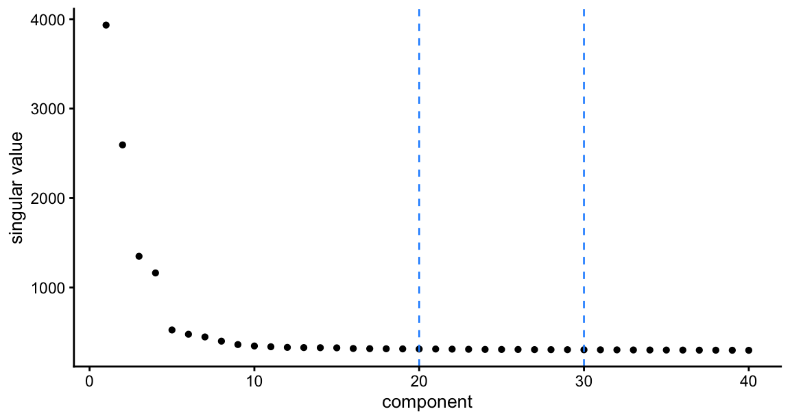
round(d[1:25]) [1] 3934 2594 1348 1162 524 476 446 399 361 345 337 330 327 326 325
[16] 317 315 314 313 311 311 310 308 307 307The eigenvalues plateau around \(K=12\). We fit at \(K = 20\) and \(K = 30\), both well into the plateau. There are 26 different sampling populations here, so this is the range in which there are enough components to give each population its own factor if that is desired..
200 iterations from each of five random starts (seed = 1:5) at each \(K\). The objective is not concave, so the starts do not all reach the same place; we keep the one with the highest total objective, and the trace plotted below is that one.
# Total objective reached by each start, and which one we keep.
round(sapply(fit$fits, function(f) f$start_obj), 3) k20 k30
[1,] 12.890 18.044
[2,] 12.924 18.139
[3,] 12.890 18.171
[4,] 12.886 18.152
[5,] 12.890 18.154sapply(fit$fits, function(f) f$seed)k20 k30
2 3 At \(K = 20\) the five starts are within 0.04 of each other and give the same factors. At \(K = 30\) they are not: seed 1 ends 0.13 below the best and loses a factor that the other four find, which is taken up in the last section below.
tr <- do.call(rbind, lapply(names(fit$fits), function(kn) {
data.frame(iter = seq_along(fit$fits[[kn]]$trace),
obj = fit$fits[[kn]]$trace,
K = factor(kn, levels = names(fit$fits)))
}))
ggplot(tr, aes(iter, obj, colour = K)) +
geom_line(linewidth = 0.5) +
labs(x = "iteration", y = "sum of column objectives") +
theme_cowplot(font_size = 10)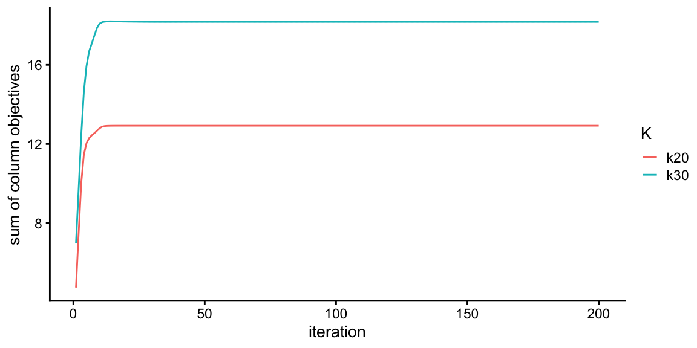
# Change in objective over the last 50 iterations.
round(sapply(fit$fits, function(f) f$trace[200] - f$trace[150]), 8) k20 k30
0.000e+00 -8.169e-05 The objective is flat to machine precision well before iteration 150 in every case.
# Factors ordered so they roughly follow the population order above: each
# factor gets the average population rank of the individuals it loads on,
# weighted by pmax(L,0)^2 so that only the large positive loadings count.
ordered_L <- function(kn) {
L <- fit$fits[[kn]]$L
w <- pmax(L, 0)^2
score <- colSums(w * as.integer(meta$pop)) / colSums(w)
L <- L[, order(score), drop = FALSE]
colnames(L) <- sprintf("f%02d", seq_len(ncol(L)))
L
}
# Loadings of all 2504 individuals, x-axis grouped by population.
plot_loadings <- function(L, ncol = 3) {
ord <- order(meta$pop)
nf <- ncol(L)
df <- data.frame(
idx = rep(seq_len(nrow(L)), nf),
loading = as.vector(L[ord, ]),
sp = rep(meta$super_pop[ord], nf),
factor = factor(rep(colnames(L), each = nrow(L)), levels = colnames(L))
)
brk <- tapply(seq_along(ord), meta$pop[ord], mean)
ggplot(df, aes(idx, loading, colour = sp)) +
geom_hline(yintercept = 0, linewidth = 0.2, colour = "grey50") +
geom_point(size = 0.3, alpha = 0.7) +
facet_wrap(~ factor, ncol = ncol, scales = "free_y") +
scale_x_continuous(breaks = brk, labels = names(brk)) +
scale_colour_manual(values = sp_palette) +
labs(x = NULL, y = "loading", colour = "super-population") +
theme_cowplot(font_size = 9) +
theme(axis.text.x = element_text(angle = 90, vjust = 0.5, size = 5),
legend.position = "bottom") +
guides(colour = guide_legend(override.aes = list(size = 3, alpha = 1),
nrow = 1))
}
# Population-mean loadings as a heatmap; rows in super-population order.
plot_pop_heatmap <- function(L) {
M <- apply(L, 2, function(x) tapply(x, meta$pop, mean))
df <- data.frame(
pop = factor(rep(rownames(M), ncol(M)), levels = rev(pop_order)),
factor = factor(rep(colnames(M), each = nrow(M)), levels = colnames(M)),
value = as.vector(M)
)
lim <- max(abs(df$value))
ggplot(df, aes(factor, pop, fill = value)) +
geom_tile() +
scale_fill_gradient2(low = "#2166AC", mid = "white", high = "#B2182B",
limits = c(-lim, lim)) +
labs(x = NULL, y = NULL, fill = "mean\nloading") +
theme_cowplot(font_size = 9) +
theme(axis.text.x = element_text(angle = 90, vjust = 0.5))
}# Populations carrying most of a factor: those whose mean loading is within a
# factor of `frac` of the largest.
pop_label <- function(x, frac = 0.3) {
v <- tapply(x, meta$pop, mean)
v <- sort(v[v > 0], decreasing = TRUE)
paste(names(v)[v >= frac * v[1]], collapse = "/")
}
# Add those populations to the column names, for plot panel labels. The fNN
# names are kept as a prefix since the text refers to factors by them. `n` is
# the number of individuals loading above 2, which separates the
# population-level factors from the very sparse ones.
with_pop_labels <- function(L) {
colnames(L) <- make.unique(sprintf("%s %s n=%d", colnames(L),
apply(L, 2, pop_label), colSums(L > 2)))
L
}# The individuals with the largest loading on each factor, as a sanity check on
# what the very one-sided factors are actually picking out.
top_inds <- function(L, n = 6) {
t(apply(L, 2, function(x) {
i <- order(x, decreasing = TRUE)[1:n]
sprintf("%s/%s(%.0f)", meta$sample[i], meta$pop[i], x[i])
}))
}
# Summaries used to tell population factors from individual-level ones.
fac_summary <- function(L) {
round(rbind(
obj = skew_obj(L),
skewness = apply(L, 2, function(x) mean(x^3) / mean(x^2)^1.5),
`max loading` = apply(L, 2, max),
`n loading >2` = colSums(L > 2)
), 2)
}Before looking at the rank-\(r\) (symmetric) fits, it is worth asking what the \(x|x|\) objective looks like on its own, without the orthogonality constraint. Following the approach in pancreas_celseq2_ica, we run 1000 independent rank-1 fastICA runs in parallel — one column of W per run, each normalized to unit length after every update, with no orthogonalization between them — from random starts, whitening to 30 components. Whatever the runs converge to are the local maxima of the objective, and the number of runs landing in each is a rough measure of the size of its basin of attraction.
n <- nrow(meta)
U30 <- sqrt(n) * t(fit$U_c[, 1:30]) # whitened row space, 30 x n
# Rank-1 update, applied to all starts at once: W is 30 x n_starts and each
# column is normalized separately, so the columns never interact.
r1_update <- function(U, W) {
P <- t(U) %*% W
G <- 2 * abs(P)
G2 <- 2 * sign(P)
W <- U %*% G - sweep(W, 2, colSums(G2), "*")
sweep(W, 2, sqrt(colSums(W^2)) + 1e-15, "/")
}
set.seed(1)
W <- matrix(rnorm(30 * 1000), 30, 1000)
W <- sweep(W, 2, sqrt(colSums(W^2)), "/")
for (i in 1:500) {
W_old <- W
W <- r1_update(U30, W)
}
# Largest change in any column over the final iteration: all runs have converged.
signif(max(1 - abs(colSums(W * W_old))), 3)[1] 5.55e-16L_r1 <- t(U30) %*% WRuns that found the same maximum give the same loading vector, so we cluster the 1000 results by correlation distance with complete linkage, which guarantees that no two members of a cluster are less correlated than the threshold. We use signed correlation rather than \(|\)correlation\(|\): \(x|x|\) is not sign-symmetric, so \(w\) and \(-w\) are genuinely different solutions and should not be merged.
hc <- hclust(as.dist(1 - cor(L_r1)), method = "complete")
# The clustering is not sensitive to where we cut.
sapply(c(0.90, 0.95, 0.99), function(tau) length(unique(cutree(hc, h = 1 - tau))))[1] 14 14 14cl <- cutree(hc, h = 0.05)
size <- sort(table(cl), decreasing = TRUE)
keep <- match(as.integer(names(size)), cl) # one representative per cluster
L_c <- L_r1[, keep, drop = FALSE]
colnames(L_c) <- sprintf("n=%d obj=%.2f", as.integer(size), skew_obj(L_c))
as.integer(size) [1] 307 124 109 99 75 63 55 52 51 44 12 6 2 1So the 1000 runs found only 14 distinct maxima, and the answer is the same whether we cut at a correlation of 0.90 or 0.99 — these are well separated, not a continuum.
plot_loadings(L_c, ncol = 4)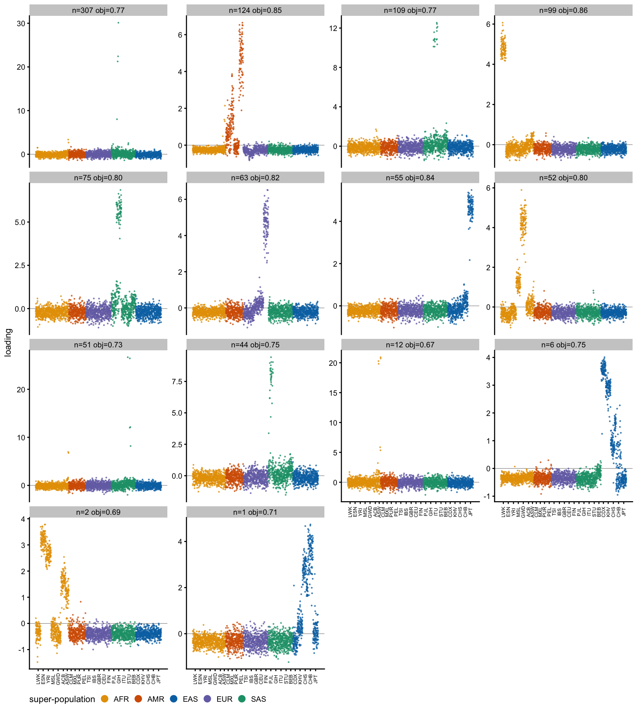
The panels are labelled with the number of runs that found each maximum and with its objective. The two are only weakly related — a correlation of 0.39, on 14 points — so basin size is not a stand-in for how good the solution is:
round(rbind(size = as.integer(size), obj = skew_obj(L_c)), 3) n=307 obj=0.77 n=124 obj=0.85 n=109 obj=0.77 n=99 obj=0.86 n=75 obj=0.80
size 307.000 124.000 109.000 99.000 75.000
obj 0.774 0.851 0.767 0.864 0.805
n=63 obj=0.82 n=55 obj=0.84 n=52 obj=0.80 n=51 obj=0.73 n=44 obj=0.75
size 63.000 55.000 52.0 51.000 44.000
obj 0.824 0.837 0.8 0.731 0.748
n=12 obj=0.67 n=6 obj=0.75 n=2 obj=0.69 n=1 obj=0.71
size 12.000 6.000 2.000 1.000
obj 0.672 0.749 0.691 0.709cor(as.integer(size), skew_obj(L_c))[1] 0.394493The largest basin by a wide margin, with 307 of the 1000 runs, is the GIH trio — a factor that loads on three individuals — and its objective (0.77) is only middling. The highest objective (0.86) belongs to LWK, which 99 runs found. At the other end, the ESN/YRI and CHB/CHS maxima were each found by two runs and one run respectively, and would have been missed entirely by a handful of starts.
Every one of these maxima (or at least 13 out of 14) corresponds to a factor of the symmetric \(K = 30\) fit: 13 of the 14 correlate above 0.9 with a factor in \(K=30\). But of course the converse is false since \(K=30\) identifies 30 components.
L30_pre <- ordered_L("k30")
R <- cor(L_c, L30_pre)
# For each rank-1 cluster, its best match among the K = 30 factors.
data.frame(size = as.integer(size),
match = colnames(L30_pre)[apply(R, 1, which.max)],
cor = round(apply(R, 1, max), 2)) size match cor
n=307 obj=0.77 307 f22 0.99
n=124 obj=0.85 124 f13 0.92
n=109 obj=0.77 109 f25 0.99
n=99 obj=0.86 99 f01 0.98
n=75 obj=0.80 75 f23 0.98
n=63 obj=0.82 63 f19 0.98
n=55 obj=0.84 55 f30 0.98
n=52 obj=0.80 52 f04 0.94
n=51 obj=0.73 51 f27 0.98
n=44 obj=0.75 44 f20 0.99
n=12 obj=0.67 12 f06 0.72
n=6 obj=0.75 6 f28 0.94
n=2 obj=0.69 2 f02 0.91
n=1 obj=0.71 1 f29 0.95# How many K = 30 factors have no rank-1 counterpart?
sum(apply(R, 2, max) < 0.9)[1] 1717 of the 30 symmetric factors have no counterpart among the 14, including major population factors — MSL, CLM, MXL, PUR, TSI, GBR/CEU, STU/BEB/ITU — and every one of the relative-pair factors.
It is tempting to conclude from this that those factors are not local maxima of the unconstrained objective, and that they exist only because orthogonality to the other \(K-1\) components rules out sliding towards one of the 14. That conclusion would be too quick: 1000 random starts tell us about basins of attraction, not about which maxima exist. So we should test it directly.
Each column of the rank-\(r\) solution is a unit vector \(w\) in the whitened space, so we can ask the question exactly. Write \(s = U'w\); on the unit sphere the objective, its Riemannian gradient and its Riemannian Hessian are
\[ \phi(w) = \tfrac{1}{n}\sum_i s_i|s_i|, \qquad \nabla = P\,\tfrac{2}{n}U|s|, \qquad H = P\left(\tfrac{2}{n}U\,\text{diag}(\text{sign}(s))\,U'\right)P - (w'\nabla_{\!e})P, \]
with \(P = I - ww'\) the projection onto the tangent space. A local maximum has \(\|\nabla\| = 0\) and all tangent eigenvalues of \(H\) at most 0.
U30t <- t(U30)
phi <- function(w) { s <- as.vector(U30t %*% w); mean(s * abs(s)) }
egrad <- function(w) (2 / n) * (U30 %*% abs(as.vector(U30t %*% w)))
rgrad <- function(w) { g <- egrad(w); as.vector(g - sum(w * g) * w) }
rhess <- function(w) {
P <- diag(nrow(U30)) - tcrossprod(w)
P %*% ((2 / n) * (U30 %*% (sign(as.vector(U30t %*% w)) * U30t))) %*% P -
sum(w * egrad(w)) * P
}
# Largest tangent-space eigenvalue (the radial direction is dropped).
max_tangent_eig <- function(w) {
H <- rhess(w)
sort(eigen((H + t(H)) / 2, symmetric = TRUE)$values, decreasing = TRUE)[2]
}The 14 rank-1 maxima pass, as they must:
W_c <- W[, keep, drop = FALSE]
round(rbind(`grad norm` = apply(W_c, 2, function(w) sqrt(sum(rgrad(w)^2))),
`max eigen` = apply(W_c, 2, max_tangent_eig)), 6) [,1] [,2] [,3] [,4] [,5] [,6] [,7]
grad norm 0.000000 0.000000 0.000000 0.000000 0.000000 0.000000 0.000000
max eigen -0.159895 -0.578133 -0.708298 -0.835141 -0.537875 -1.270753 -1.300786
[,8] [,9] [,10] [,11] [,12] [,13] [,14]
grad norm 0.000000 0.000000 0.00000 0.000000 0.000000 0.000000 0.000000
max eigen -0.439218 -0.124608 -1.11097 -0.169605 -1.566818 -0.488211 -1.505209Now the same test at the 30 symmetric factors, together with what the rank-1 iteration does when started from each of them:
# W for the K = 30 factors, in the document's ordering: L = sqrt(n) U_c W.
W30 <- t(fit$U_c[, 1:30]) %*% L30_pre / sqrt(n)
W_from30 <- W30
for (i in 1:500) W_from30 <- r1_update(U30, W_from30)
L_from30 <- t(U30) %*% W_from30
tab <- data.frame(
factor = colnames(L30_pre),
`grad norm` = round(apply(W30, 2, function(w) sqrt(sum(rgrad(w)^2))), 2),
`max eigen` = round(apply(W30, 2, max_tangent_eig), 2),
`cor with start after r1` = round(diag(cor(L30_pre, L_from30)), 2),
check.names = FALSE, row.names = NULL)
tab factor grad norm max eigen cor with start after r1
1 f01 0.22 -0.56 0.98
2 f02 0.35 0.00 0.91
3 f03 0.30 0.00 0.20
4 f04 0.31 -0.36 0.94
5 f05 0.15 0.00 0.03
6 f06 0.15 -0.01 0.72
7 f07 0.22 0.23 0.01
8 f08 0.28 -0.03 0.06
9 f09 0.41 0.06 0.01
10 f10 0.38 0.46 0.13
11 f11 0.30 0.00 0.33
12 f12 0.21 -0.19 0.99
13 f13 0.26 -0.40 0.92
14 f14 0.43 0.14 0.92
15 f15 0.54 0.00 0.02
16 f16 0.32 0.00 0.92
17 f17 0.22 1.02 0.03
18 f18 0.43 0.43 0.06
19 f19 0.23 -0.58 0.98
20 f20 0.17 -0.21 0.99
21 f21 0.31 -0.06 0.04
22 f22 0.18 -0.21 0.99
23 f23 0.20 -0.46 0.98
24 f24 0.22 0.11 0.02
25 f25 0.14 -0.24 0.99
26 f26 0.47 0.10 0.06
27 f27 0.17 -0.09 0.98
28 f28 0.33 -0.19 0.94
29 f29 0.30 -0.17 0.95
30 f30 0.25 -0.53 0.98So the strict answer is that none of the 30 is a local maximum: the gradient norm is 0.14–0.54 at every one of them, against 0 at the 14. The orthogonality constraint is active everywhere, not just at the 17 factors the random starts missed.
But that is not the interesting distinction. The useful question is whether each factor sits near a genuine maximum, and the last column answers it: 16 of the 30 do not change appreciably under the rank-1 iteration (correlation above 0.9 with where they started) and are therefore small perturbations of an unconstrained maximum. The other 14 slide away, most of them to something unrelated (nine end below a correlation of 0.1 with their starting point!).
The 30 starting points converge to 17 distinct maxima, three of which are not among the 14 found from random starts:
all_max <- cbind(L_c, L_from30)
cl2 <- cutree(hclust(as.dist(1 - cor(all_max)), method = "complete"), h = 0.05)
from_random <- unique(cl2[seq_len(ncol(L_c))])
from_rankr <- unique(cl2[-seq_len(ncol(L_c))])
c(random = length(from_random), rankr = length(from_rankr),
new = length(setdiff(from_rankr, from_random)))random rankr new
14 17 3 new_j <- sapply(setdiff(from_rankr, from_random),
function(k) which(cl2 == k)[1] - ncol(L_c))
data.frame(reached_from = colnames(L30_pre)[new_j],
obj = round(apply(W_from30[, new_j, drop = FALSE], 2, phi), 3),
top_pops = apply(L_from30[, new_j, drop = FALSE], 2, function(x) {
v <- sort(tapply(x, meta$pop, mean), decreasing = TRUE)
paste(sprintf("%s(%.1f)", names(v)[1:3], v[1:3]), collapse = " ")
}), row.names = NULL) reached_from obj top_pops
1 f12 0.672 PUR(4.2) IBS(0.5) MXL(0.1)
2 f14 0.581 TSI(3.4) IBS(2.1) CLM(0.7)
3 f16 0.586 GBR(3.2) CEU(2.9) IBS(0.8)These are PUR, TSI and GBR/CEU — three of the factors I listed above as having “no rank-1 counterpart”. They are local maxima of the unconstrained objective, with gradient norm 0 and no ascent direction; their basins are simply small enough that 1000 random starts never landed in one. So the objective has at least 17 maxima, not 14, and the count from random starts is a lower bound.
There remain several factors — MSL, CLM, MXL, STU/BEB/ITU and all the relative-pair factors — that disappear when the orthogonality constraint is lifted. Most of them slide away to something completely different (f05, f07, f09 and f21 all collapse onto the GIH trio). For those, orthogonality is helping to genuinely generate the factor rather than just perturbing one the objective would find on its own. It remains to be answered “how real are these optima”, the ones that are only present under an orthogonality constraint?
The 30 rank-1 runs started from the \(K = 30\) factors converge to 17 distinct points, so it is worth looking at all of them together. Each panel is labelled with the populations most represented in that factor — every population whose mean loading is at least 30% of the largest — together with the objective and the number of individuals loading above 2, which separates the population-level factors from the very sparse ones.
cl17 <- cutree(hclust(as.dist(1 - cor(L_from30)), method = "complete"), h = 0.05)
rep_j <- match(unique(cl17), cl17) # one per cluster
n_start <- as.integer(table(cl17)[as.character(cl17[rep_j])])
L17 <- L_from30[, rep_j, drop = FALSE]
w <- pmax(L17, 0)^2
o <- order(colSums(w * as.integer(meta$pop)) / colSums(w)) # population order
L17 <- L17[, o, drop = FALSE]
n_start <- n_start[o]
colnames(L17) <- make.unique(sprintf("%s obj=%.2f n=%d",
apply(L17, 2, pop_label),
skew_obj(L17),
colSums(L17 > 2)))
ncol(L17)[1] 17plot_loadings(L17, ncol = 4)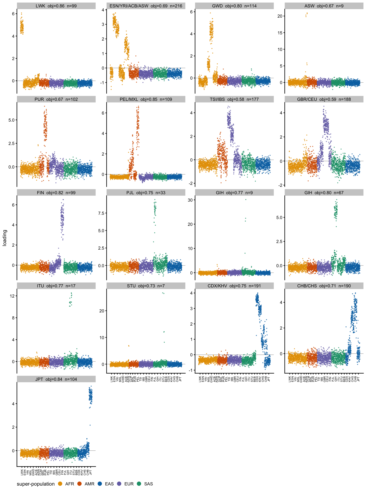
Twelve of the 17 are population factors and five are sparser, individual-level kind (the panels with n in single figures, one with \(n=17\) is borderline): a GIH trio, an ASW pair, an STU pair, and the ITU and STU subgroups. Note that GIH appears twice — once as the trio, with a maximum loading of 30, and once as a population factor.
Population-mean loadings, then the loadings of all individuals. Factors are ordered so that they roughly follow the population order, AFR to EAS.
L20 <- ordered_L("k20")
plot_pop_heatmap(L20)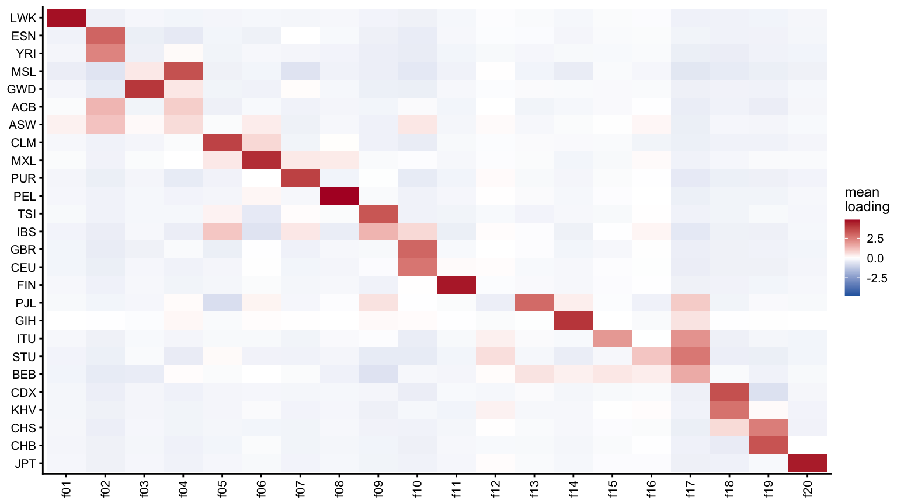
plot_loadings(with_pop_labels(L20), ncol = 4)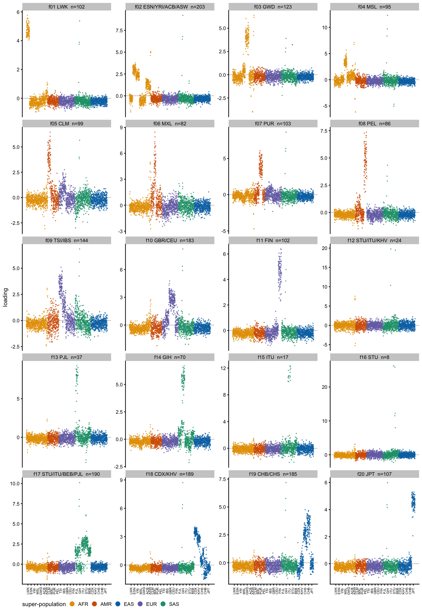
With 20 components and 26 populations, 16 of the factors are a single population or a tight pair, and in the new order they read across the panel as LWK (f01); ESN/YRI with ACB/ASW intermediate (f02); GWD (f03); MSL (f04); CLM (f05); MXL (f06); PUR (f07); PEL (f08); TSI (f09); GBR/CEU (f10); FIN (f11); GIH (f14); STU/ITU/BEB (f17); CDX/KHV (f18); CHB/CHS (f19); and JPT (f20). Admixture sometimes appears as intermediate loadings, but some admixed populations are assigned their own factor.
fac_summary(L20) f01 f02 f03 f04 f05 f06 f07 f08 f09 f10
obj 0.84 0.63 0.68 0.46 0.49 0.51 0.57 0.79 0.50 0.55
skewness 4.34 2.45 3.33 2.82 2.52 3.15 3.06 4.65 2.11 2.25
max loading 5.76 9.22 6.39 12.30 6.46 8.44 8.63 7.37 6.84 8.22
n loading >2 102.00 203.00 123.00 95.00 99.00 82.00 103.00 86.00 144.00 183.00
f11 f12 f13 f14 f15 f16 f17 f18 f19 f20
obj 0.80 0.39 0.71 0.78 0.74 0.67 0.62 0.70 0.66 0.82
skewness 4.31 6.93 6.05 4.66 8.65 15.72 2.50 2.84 2.72 4.16
max loading 6.39 19.77 9.25 6.70 12.34 26.25 10.10 8.72 7.18 5.99
n loading >2 102.00 24.00 37.00 70.00 17.00 8.00 190.00 189.00 185.00 107.00The four gaps in that list — f12, f13, f15, f16 — are not population factors. They have skewness 6–16 and max loadings of 9–26, against 2–5 and 5–12 for the population factors, and fewer than 40 individuals loading above 2. They pick out subgroups of individuals:
top_inds(L20) [,1] [,2] [,3] [,4]
f01 "NA19331/LWK(6)" "NA19334/LWK(6)" "NA19320/LWK(6)" "NA19376/LWK(6)"
f02 "NA20900/GIH(9)" "NA20891/GIH(7)" "NA20882/GIH(6)" "NA20359/ASW(5)"
f03 "NA20359/ASW(6)" "NA20362/ASW(6)" "HG02611/GWD(6)" "HG02896/GWD(6)"
f04 "NA20900/GIH(12)" "NA20891/GIH(10)" "NA20882/GIH(8)" "NA19913/ASW(7)"
f05 "HG01465/CLM(6)" "HG01468/CLM(6)" "HG01474/CLM(6)" "NA20900/GIH(6)"
f06 "NA19732/MXL(8)" "NA19741/MXL(8)" "NA19731/MXL(7)" "NA19729/MXL(7)"
f07 "NA20900/GIH(9)" "NA20891/GIH(6)" "HG01061/PUR(6)" "NA20882/GIH(6)"
f08 "HG02291/PEL(7)" "HG01920/PEL(7)" "HG02271/PEL(7)" "HG02272/PEL(7)"
f09 "NA20900/GIH(7)" "NA20891/GIH(6)" "NA20770/TSI(5)" "NA20812/TSI(5)"
f10 "NA20900/GIH(8)" "NA20882/GIH(6)" "NA20891/GIH(6)" "HG00120/GBR(5)"
f11 "HG00358/FIN(6)" "HG00368/FIN(6)" "HG00383/FIN(6)" "HG00271/FIN(6)"
f12 "HG03873/ITU(20)" "HG03998/STU(19)" "HG03866/ITU(10)" "NA20321/ASW(8)"
f13 "HG02786/PJL(9)" "HG03705/PJL(9)" "HG02687/PJL(9)" "HG02793/PJL(9)"
f14 "NA21119/GIH(7)" "NA20902/GIH(7)" "NA21100/GIH(7)" "NA21135/GIH(6)"
f15 "HG04023/ITU(12)" "HG04056/ITU(12)" "HG04096/ITU(12)" "HG04025/ITU(12)"
f16 "HG03733/STU(26)" "HG03899/STU(26)" "HG03955/STU(12)" "HG03898/STU(12)"
f17 "NA20900/GIH(10)" "NA20891/GIH(8)" "NA20882/GIH(7)" "HG03750/STU(6)"
f18 "NA20900/GIH(9)" "NA20891/GIH(6)" "NA20882/GIH(6)" "HG01806/CDX(4)"
f19 "NA20900/GIH(7)" "NA20891/GIH(6)" "HG00592/CHS(5)" "NA20882/GIH(5)"
f20 "NA20900/GIH(6)" "NA19056/JPT(5)" "NA18964/JPT(5)" "NA18944/JPT(5)"
[,5] [,6]
f01 "NA19037/LWK(5)" "NA19430/LWK(5)"
f02 "NA20317/ASW(5)" "NA20362/ASW(5)"
f03 "HG02895/GWD(5)" "HG02861/GWD(5)"
f04 "NA19904/ASW(7)" "HG03478/MSL(6)"
f05 "HG01374/CLM(6)" "HG01357/CLM(6)"
f06 "NA19785/MXL(7)" "NA19746/MXL(7)"
f07 "HG01054/PUR(6)" "HG00743/PUR(6)"
f08 "HG02259/PEL(7)" "HG01923/PEL(7)"
f09 "NA20828/TSI(5)" "NA20797/TSI(4)"
f10 "HG00116/GBR(5)" "HG00099/GBR(4)"
f11 "HG00361/FIN(6)" "HG00269/FIN(6)"
f12 "NA20317/ASW(7)" "NA20320/ASW(7)"
f13 "HG02778/PJL(9)" "HG02780/PJL(9)"
f14 "NA21109/GIH(6)" "NA21093/GIH(6)"
f15 "HG03773/ITU(12)" "HG04026/ITU(11)"
f16 "HG03991/STU(8)" "NA20318/ASW(3)"
f17 "HG03754/STU(6)" "HG03884/STU(4)"
f18 "HG02178/CDX(4)" "HG00879/CDX(4)"
f19 "NA18599/CHB(5)" "NA18596/CHB(5)"
f20 "NA18983/JPT(5)" "NA18957/JPT(5)" f16 is four STU individuals (HG03733, HG03899, HG03955, HG03898) with loadings of 12–26, and f12 an ITU/STU pair plus a few ASW; both look like relatedness rather than population structure. f13 and f15 are larger subgroups, of 37 PJL and 17 ITU individuals respectively — f15 is the ITU cluster taken up in the last section.
L30 <- ordered_L("k30")
plot_pop_heatmap(L30)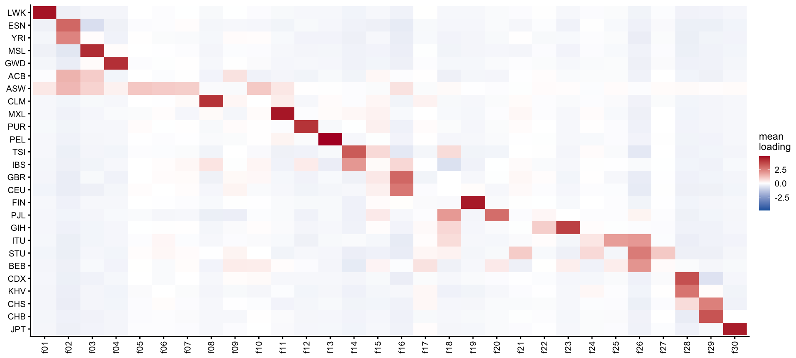
Splitting the factors by whether the rank-1 runs recover them, using the test from above: a factor counts as recovered if, when we lift the orthogonality constraint and run rank-1 from it, we come back to the same place (correlation above 0.9). Equivalently, these are the factors that sit at one of the 17 unconstrained maxima.
recovered <- tab[["cor with start after r1"]][match(colnames(L30), tab$factor)] > 0.9
table(recovered)recovered
FALSE TRUE
14 16 Recovered by the rank-1 runs:
plot_loadings(with_pop_labels(L30[, recovered, drop = FALSE]), ncol = 4)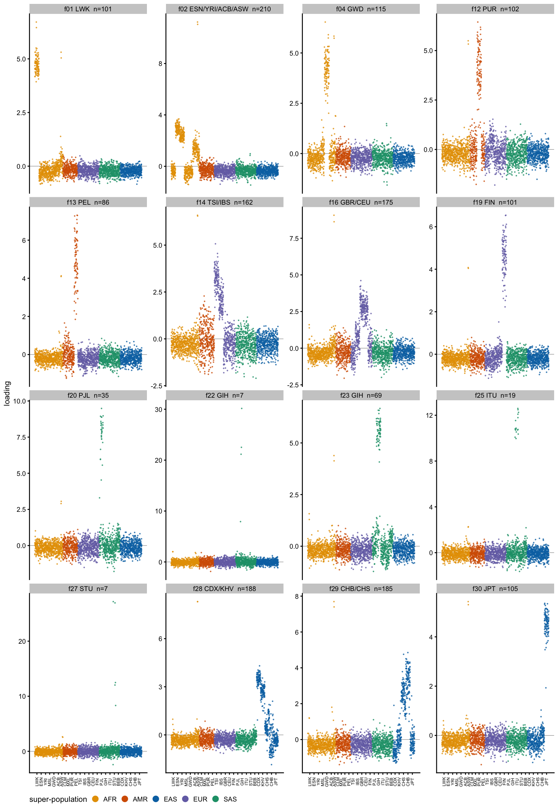
Not recovered — these exist only under the orthogonality constraint:
plot_loadings(with_pop_labels(L30[, !recovered, drop = FALSE]), ncol = 4)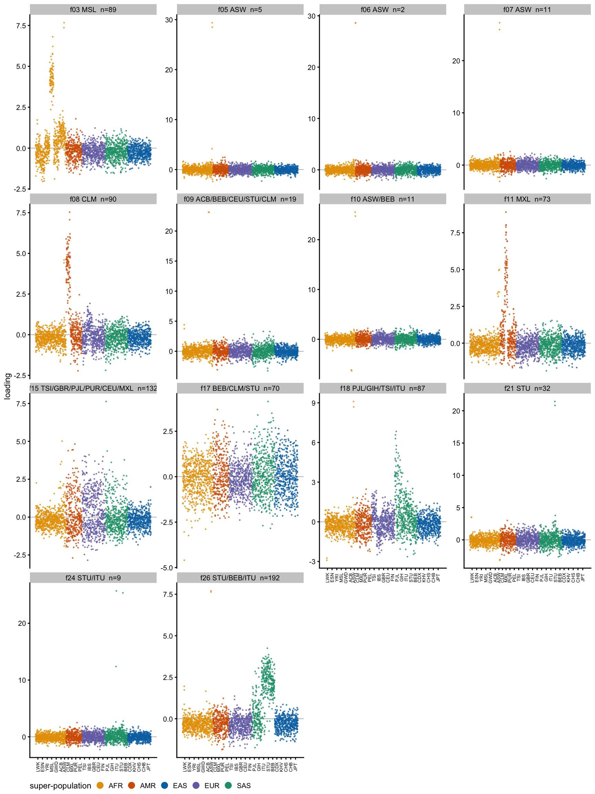
The split is not simply “population factors versus sparse ones”. The recovered group holds most of the population factors (LWK, GWD, MSL, PUR, PEL, TSI/IBS, GBR/CEU, FIN, PJL, GIH, CDX/KHV, CHB/CHS, JPT) and the ITU, STU and GIH-trio subgroups. The unrecovered group mixes the relative-pair factors with several ordinary-looking population factors — CLM, MXL, and the STU/BEB/ITU composite. Note also that three of the recovered factors (PUR, TSI/IBS, GBR/CEU) sit at maxima that the 1000 random starts never reached; they are recovered only when rank-1 is started at the rank-\(r\) factor itself.
fac_summary(L30) f01 f02 f03 f04 f05 f06 f07 f08 f09 f10
obj 0.84 0.63 0.58 0.75 0.66 0.63 0.54 0.60 0.42 0.47
skewness 4.38 2.84 3.16 3.76 19.37 18.69 15.03 3.33 9.91 12.51
max loading 6.72 11.23 7.67 6.54 29.38 28.65 27.26 7.54 23.14 25.54
n loading >2 101.00 210.00 89.00 115.00 5.00 2.00 11.00 90.00 19.00 11.00
f11 f12 f13 f14 f15 f16 f17 f18 f19 f20
obj 0.60 0.66 0.80 0.50 0.34 0.53 0.07 0.35 0.80 0.74
skewness 3.97 3.53 4.74 2.04 1.37 2.31 0.24 2.09 4.32 6.33
max loading 8.90 6.44 7.31 6.59 7.63 9.07 4.14 9.10 6.54 9.48
n loading >2 73.00 102.00 86.00 162.00 132.00 175.00 70.00 87.00 101.00 35.00
f21 f22 f23 f24 f25 f26 f27 f28 f29 f30
obj 0.37 0.76 0.79 0.57 0.76 0.52 0.72 0.69 0.66 0.81
skewness 7.61 19.50 4.84 14.08 8.98 2.01 17.54 2.84 2.79 4.12
max loading 21.43 30.16 6.67 25.71 12.60 7.70 27.18 8.31 7.69 5.43
n loading >2 32.00 7.00 69.00 9.00 19.00 192.00 7.00 188.00 185.00 105.00Every population factor from \(K = 20\) survives, and the extra components are almost all individual-level: eleven factors have skewness above 6, nine of them with max loadings of 12–30 on a handful of people.
top_inds(L30) [,1] [,2] [,3] [,4]
f01 "NA19331/LWK(7)" "NA19334/LWK(6)" "NA19320/LWK(6)" "NA19376/LWK(5)"
f02 "NA19904/ASW(11)" "NA19913/ASW(11)" "HG03343/ESN(4)" "HG03267/ESN(4)"
f03 "NA19913/ASW(8)" "NA19904/ASW(7)" "HG03478/MSL(7)" "HG03484/MSL(6)"
f04 "HG02611/GWD(7)" "HG02896/GWD(6)" "NA19904/ASW(6)" "HG02895/GWD(6)"
f05 "NA20317/ASW(29)" "NA20318/ASW(28)" "NA20296/ASW(4)" "HG01402/PUR(2)"
f06 "NA20359/ASW(29)" "NA20362/ASW(29)" "NA19904/ASW(2)" "HG01125/CLM(2)"
f07 "NA20321/ASW(27)" "NA20320/ASW(26)" "HG01110/PUR(3)" "HG01440/CLM(2)"
f08 "HG01465/CLM(8)" "HG01468/CLM(7)" "HG01491/CLM(6)" "HG01351/CLM(6)"
f09 "HG02429/ACB(23)" "HG02479/ACB(23)" "NA19331/LWK(4)" "NA19334/LWK(4)"
f10 "NA20334/ASW(26)" "NA20355/ASW(25)" "HG03738/STU(3)" "HG03837/STU(2)"
f11 "NA19732/MXL(9)" "NA19741/MXL(8)" "NA19731/MXL(8)" "NA19729/MXL(8)"
f12 "HG01054/PUR(6)" "HG01302/PUR(6)" "HG01308/PUR(6)" "HG00743/PUR(6)"
f13 "HG02271/PEL(7)" "HG02291/PEL(7)" "HG01920/PEL(7)" "HG02259/PEL(7)"
f14 "NA19904/ASW(7)" "NA19913/ASW(7)" "NA20531/TSI(5)" "NA20787/TSI(5)"
f15 "HG02658/PJL(8)" "HG02479/ACB(5)" "HG01072/PUR(5)" "NA19786/MXL(4)"
f16 "NA19904/ASW(9)" "NA19913/ASW(9)" "HG00120/GBR(5)" "HG00116/GBR(4)"
f17 "HG03837/STU(4)" "NA19649/MXL(4)" "HG03809/BEB(3)" "NA20878/GIH(3)"
f18 "NA19904/ASW(9)" "NA19913/ASW(9)" "HG02694/PJL(7)" "HG02649/PJL(7)"
f19 "HG00368/FIN(7)" "HG00358/FIN(7)" "HG00383/FIN(6)" "HG00271/FIN(6)"
f20 "HG02786/PJL(9)" "HG03705/PJL(9)" "HG02687/PJL(9)" "HG02778/PJL(9)"
f21 "HG03750/STU(21)" "HG03754/STU(21)" "HG03837/STU(4)" "NA19334/LWK(4)"
f22 "NA20900/GIH(30)" "NA20891/GIH(23)" "NA20882/GIH(21)" "NA20864/GIH(8)"
f23 "NA21119/GIH(7)" "NA20902/GIH(7)" "NA21100/GIH(7)" "NA21093/GIH(6)"
f24 "HG03873/ITU(26)" "HG03998/STU(25)" "HG03866/ITU(12)" "HG04035/STU(3)"
f25 "HG04023/ITU(13)" "HG04056/ITU(12)" "HG04096/ITU(12)" "HG04025/ITU(12)"
f26 "NA19913/ASW(8)" "NA19904/ASW(8)" "HG03740/STU(4)" "HG03885/STU(4)"
f27 "HG03733/STU(27)" "HG03899/STU(27)" "HG03955/STU(12)" "HG03898/STU(12)"
f28 "NA19913/ASW(8)" "NA19904/ASW(8)" "HG02375/CDX(4)" "HG01811/CDX(4)"
f29 "NA19904/ASW(8)" "NA19913/ASW(7)" "NA18596/CHB(5)" "HG00592/CHS(5)"
f30 "NA19904/ASW(5)" "NA18947/JPT(5)" "NA19056/JPT(5)" "NA18944/JPT(5)"
[,5] [,6]
f01 "NA19328/LWK(5)" "NA19037/LWK(5)"
f02 "HG03121/ESN(4)" "HG03126/ESN(4)"
f03 "HG03469/MSL(6)" "HG03464/MSL(6)"
f04 "NA19913/ASW(6)" "HG03259/GWD(5)"
f05 "HG01108/PUR(2)" "NA20281/ASW(2)"
f06 "HG01198/PUR(2)" "HG00367/FIN(2)"
f07 "NA12005/CEU(2)" "HG01766/IBS(2)"
f08 "HG01474/CLM(6)" "HG01550/CLM(6)"
f09 "HG03873/ITU(3)" "HG03998/STU(3)"
f10 "HG02658/PJL(2)" "HG01566/PEL(2)"
f11 "NA19735/MXL(8)" "NA19746/MXL(7)"
f12 "HG01303/PUR(6)" "HG00734/PUR(6)"
f13 "HG02272/PEL(7)" "HG01572/PEL(7)"
f14 "NA20796/TSI(4)" "NA20588/TSI(4)"
f15 "NA19749/MXL(4)" "HG01360/CLM(4)"
f16 "HG00102/GBR(4)" "HG00105/GBR(4)"
f17 "HG03925/BEB(3)" "HG01357/CLM(3)"
f18 "HG02648/PJL(6)" "HG02699/PJL(6)"
f19 "HG00361/FIN(6)" "HG00365/FIN(6)"
f20 "HG02793/PJL(9)" "HG02724/PJL(9)"
f21 "NA19331/LWK(3)" "NA19786/MXL(3)"
f22 "HG02700/PJL(2)" "NA19334/LWK(2)"
f23 "NA21135/GIH(6)" "NA20877/GIH(6)"
f24 "HG03862/ITU(3)" "HG01247/PUR(3)"
f25 "HG04026/ITU(12)" "HG03773/ITU(12)"
f26 "HG04212/ITU(4)" "HG03856/STU(4)"
f27 "HG03991/STU(8)" "NA20334/ASW(3)"
f28 "HG02182/CDX(4)" "HG02385/CDX(4)"
f29 "NA18531/CHB(5)" "NA18547/CHB(4)"
f30 "NA19913/ASW(5)" "NA18964/JPT(5)" f05 (NA20317, NA20318), f06 (NA20359, NA20362), f07 (NA20321, NA20320) and f10 (NA20334, NA20355) are each a pair of ASW individuals, f09 an ACB pair (HG02429, HG02479), f21 an STU pair, f24 the ITU/STU pair from \(K = 20\), f27 the STU quartet, and f22 a GIH trio (NA20900, NA20891, NA20882). Pairs like these are most plausibly close relatives. f17 has an objective of 0.07 against 0.84 for the largest, and is the only factor that looks like it is fitting nothing in particular.
So increasing \(K\) from 20 to 30 does not refine the population decomposition; it spends the extra components on relatedness and on individual outliers, which is what a contrast that rewards extreme one-sidedness should be expected to do once the population-level sources are used up.
There is a cluster of 16 ITU individuals that gets its own factor at both \(K\) — f15 at \(K = 20\), f25 at \(K = 30\), with loadings of 12–13 — and it is exactly the same 16 people in each:
itu20 <- which(L20[, "f15"] > 8)
itu30 <- which(L30[, "f25"] > 8)
identical(sort(meta$sample[itu20]), sort(meta$sample[itu30]))[1] TRUEdata.frame(sample = meta$sample[itu20], pop = meta$pop[itu20],
k20 = round(L20[itu20, "f15"], 1),
k30 = round(L30[itu30, "f25"], 1), row.names = NULL) sample pop k20 k30
1 HG03717 ITU 10.0 10.1
2 HG03718 ITU 10.6 10.8
3 HG03772 ITU 10.7 10.7
4 HG03773 ITU 11.6 11.5
5 HG03784 ITU 10.8 10.8
6 HG03785 ITU 10.0 10.0
7 HG03786 ITU 10.8 10.9
8 HG03861 ITU 10.5 10.5
9 HG04017 ITU 10.8 10.7
10 HG04023 ITU 12.3 12.6
11 HG04025 ITU 11.7 12.1
12 HG04026 ITU 11.3 11.8
13 HG04054 ITU 10.7 10.8
14 HG04056 ITU 12.2 12.5
15 HG04063 ITU 10.2 10.4
16 HG04096 ITU 12.0 12.3That is the stable answer. But it is worth recording how we got here, because the first \(K = 30\) fit we ran — a single start, seed = 1 — did not look like this at all. There the ITU factor was absent, and instead these same 16 individuals appeared as a clump at intermediate loadings on all four of the African factors:
L30_s1 <- fit$fits$k30$all_L[[1]] # the seed-1 solution
w <- pmax(L30_s1, 0)^2
L30_s1 <- L30_s1[, order(colSums(w * as.integer(meta$pop)) / colSums(w))]
colnames(L30_s1) <- sprintf("f%02d", seq_len(ncol(L30_s1)))
round(L30_s1[itu20, 1:4], 1) # the 16, on the four AFR factors f01 f02 f03 f04
HG03717 2.1 2.2 3.9 2.2
HG03718 2.0 2.4 4.5 2.4
HG03772 2.0 2.2 4.5 2.8
HG03773 2.4 2.0 4.8 3.0
HG03784 1.9 2.6 4.3 2.5
HG03785 1.9 2.1 3.9 2.3
HG03786 2.1 1.5 4.6 2.7
HG03861 2.0 3.0 4.1 2.3
HG04017 2.2 2.3 4.3 2.7
HG04023 2.2 3.0 5.1 2.8
HG04025 2.4 2.2 5.0 3.1
HG04026 2.2 2.3 5.0 2.9
HG04054 1.8 2.5 4.7 2.1
HG04056 2.5 3.4 5.1 2.3
HG04063 1.9 2.6 3.9 2.2
HG04096 2.7 2.8 4.8 3.0round(max(apply(L30_s1[itu20, ], 1, max)), 1) # their largest loading anywhere[1] 5.6Plotting those four factors against each other shows it clearly: the 16 are a single tight clump sitting off the origin in every pane, not four unrelated sets of individuals.
pairs <- t(combn(sprintf("f%02d", 1:4), 2))
df <- do.call(rbind, lapply(seq_len(nrow(pairs)), function(i) {
data.frame(x = L30_s1[, pairs[i, 1]],
y = L30_s1[, pairs[i, 2]],
grp = ifelse(seq_len(nrow(L30_s1)) %in% itu20,
"ITU subgroup", "other"),
pane = paste(pairs[i, 1], "vs", pairs[i, 2]))
}))
df <- df[order(df$grp == "ITU subgroup"), ] # draw the clump on top
ggplot(df, aes(x, y, colour = grp, size = grp)) +
geom_point(alpha = 0.7) +
facet_wrap(~ pane, nrow = 2, scales = "free") +
scale_colour_manual(values = c("ITU subgroup" = "#D55E00", other = "grey70")) +
scale_size_manual(values = c("ITU subgroup" = 1.1, other = 0.35)) +
labs(x = NULL, y = NULL, colour = NULL) +
guides(size = "none") +
theme_cowplot(font_size = 9) +
theme(legend.position = "bottom")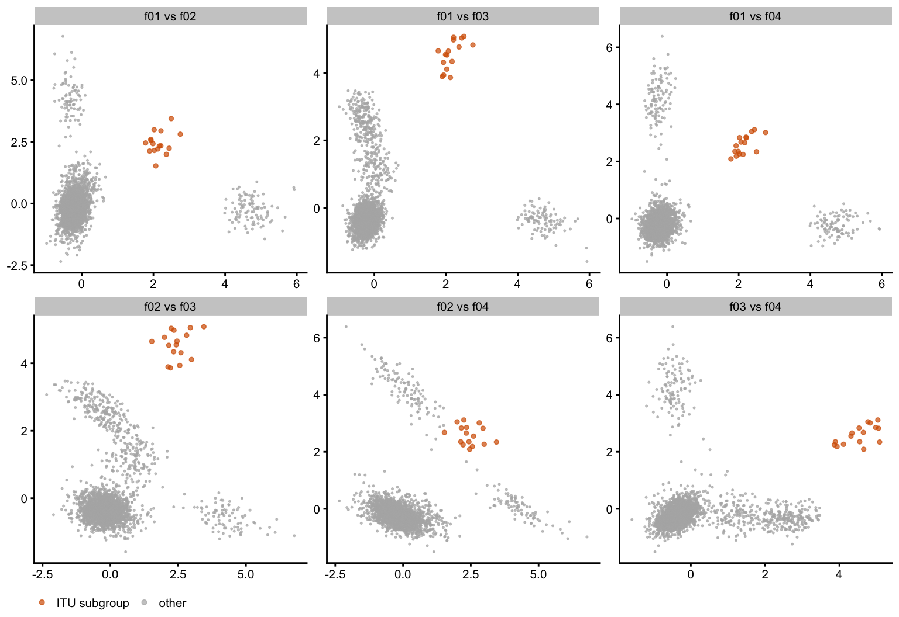
The natural reading of that plot is that the subgroup shares something with the African populations, and that at larger \(K\) the orthogonality constraint is better served by spreading it over the African directions than by keeping a separate one. That reading is wrong. What actually happened is simply that seed = 1 converged to an inferior local optimum: it is the worst of the five starts by total objective, and the only one that loses the factor.
# For each start: total objective, and the largest mean loading over the 16.
round(rbind(
`total objective` = fit$fits$k30$start_obj,
`ITU mean loading` = sapply(fit$fits$k30$all_L,
function(L) max(colMeans(L[itu20, , drop = FALSE])))
), 2) [,1] [,2] [,3] [,4] [,5]
total objective 18.04 18.14 18.17 18.15 18.15
ITU mean loading 4.60 11.15 11.15 11.16 11.16Seeds 2–5 all recover the ITU factor at a mean loading of about 10, and all four beat seed 1. Warm-starting \(K = 30\) from the \(K = 20\) solution also recovers it. So the factor is not in competition with the African ones at all; the spreading is an artifact of one bad basin, and the gap in objective (0.13 out of 18) is small enough that it would be easy to miss from the numbers alone.
The practical lesson is that the trace being flat to machine precision says nothing about whether the solution is good — seed 1 converges just as cleanly as the others. Multiple starts are cheap here (about 20 seconds for all ten fits) and are the only thing that caught this.
Everything above says that the awkward features of this landscape — the enormous basin of the GIH trio, the maxima that random starts cannot reach, the rank-\(r\) factors that dissolve when freed — are tied to a small number of individuals who dominate very sparse factors. So it is worth asking what is left once they are gone.
We take the original results, pool the 30 \(K = 30\) factors with the 17 unconstrained maxima reached from them, call a factor very sparse if fewer than 20 individuals load above 2, and drop every individual with a loading above 5 on any such factor. (Both thresholds are insensitive: 20–25 and 5–8 give the same set.) This is done in code/fit_tgp_fastica.R, which then redoes the centred SVD and the \(K = 30\) rank-\(r\) fit on what remains.
ns <- fit$no_sparse
c(sparse_factors = ns$n_sparse_cols, dropped = length(ns$dropped),
remaining = nrow(ns$U_c))sparse_factors dropped remaining
23 40 2464 table(droplevels(meta$pop[match(ns$dropped, meta$sample)]))
ACB ASW GIH ITU STU
2 10 4 18 6 So 40 individuals go: the ITU subgroup (18), the ASW pairs (10), the STU quartet and pair (6), the GIH trio plus NA20864 (4), and the ACB pair (2). Note that the broader PJL subgroup survives — 33 individuals load above 2 on it, so it is not “very sparse” by this criterion.
Both searches again: 1000 random rank-1 starts, and rank-1 started at each of the new \(K = 30\) factors.
search_both <- function(U_w, U_c, L_rankr) {
nk <- ncol(U_w)
set.seed(1)
W <- matrix(rnorm(30 * 1000), 30, 1000)
W <- sweep(W, 2, sqrt(colSums(W^2)), "/")
for (i in 1:500) W <- r1_update(U_w, W)
W_k <- t(U_c[, 1:30]) %*% L_rankr / sqrt(nk)
for (i in 1:500) W_k <- r1_update(U_w, W_k)
L <- cbind(t(U_w) %*% W, t(U_w) %*% W_k)
cl <- cutree(hclust(as.dist(1 - cor(L)), method = "complete"), h = 0.05)
list(L = L, cl = cl,
random = unique(cl[1:1000]), rankr = unique(cl[-(1:1000)]))
}
n_ns <- nrow(ns$U_c)
U_ns <- sqrt(n_ns) * t(ns$U_c[, 1:30])
pop_ns <- meta$pop[match(rownames(ns$U_c), meta$sample)]
s_ns <- search_both(U_ns, ns$U_c, ns$fit$L)
c(random = length(s_ns$random), rankr = length(s_ns$rankr),
union = length(unique(s_ns$cl)))random rankr union
14 14 14 14, and the three counts agree. On the full data they were 14 random / 17 from the rank-\(r\) factors / 17 in total; here every maximum is found from a random start, so the gap between the two searches closes completely.
rep_j <- match(unique(s_ns$cl), s_ns$cl)
L_ns <- s_ns$L[, rep_j, drop = FALSE]
w <- pmax(L_ns, 0)^2
o <- order(colSums(w * as.integer(pop_ns)) / colSums(w))
L_ns <- L_ns[, o, drop = FALSE]
n_rand <- sapply(unique(s_ns$cl), function(k) sum(s_ns$cl[1:1000] == k))[o]
pop_label_ns <- function(x, frac = 0.3) {
v <- tapply(x, pop_ns, mean)
v <- sort(v[v > 0], decreasing = TRUE)
paste(names(v)[v >= frac * v[1]], collapse = "/")
}
colnames(L_ns) <- make.unique(sprintf("%s obj=%.2f n=%d",
apply(L_ns, 2, pop_label_ns),
skew_obj(L_ns), colSums(L_ns > 2)))
data.frame(factor = colnames(L_ns), rand_starts = n_rand,
max_loading = round(apply(L_ns, 2, max), 1), row.names = NULL) factor rand_starts max_loading
1 LWK obj=0.86 n=99 138 6.0
2 ESN/YRI/ACB/ASW obj=0.70 n=211 7 3.8
3 GWD obj=0.80 n=114 86 6.0
4 PUR obj=0.68 n=100 20 6.3
5 PEL/MXL obj=0.85 n=108 250 6.7
6 TSI/IBS obj=0.59 n=173 3 4.6
7 GBR/CEU obj=0.60 n=187 6 4.7
8 FIN obj=0.82 n=99 102 6.5
9 PJL obj=0.76 n=33 137 9.4
10 GIH obj=0.81 n=67 107 6.7
11 STU/ITU/BEB obj=0.68 n=222 19 6.2
12 CDX/KHV obj=0.75 n=191 15 4.0
13 CHB/CHS obj=0.71 n=188 12 4.7
14 JPT obj=0.84 n=104 98 5.5All 14 are population factors. The sparsest has 33 individuals loading above 2 (PJL) and the largest loading anywhere is 9.4, against 30 on the full data. There is nothing left that loads on a handful of people.
Three of the maxima are ones that random starts could never reach before: PUR, TSI/IBS and GBR/CEU had 0 random starts each on the full data and now have 20, 3 and 6. The 307 starts that went to the GIH trio are spread over the population factors instead, and PEL/MXL — the largest basin now — takes 250.
One maximum is new rather than merely reachable: the STU/ITU/BEB composite (obj 0.68, 222 individuals above 2). On the full data that was rank-\(r\) factor f26, one of the ones that slid away when the constraint was lifted. With the sparse individuals gone it becomes a genuine unconstrained maximum, which makes sense — the South Asian populations were previously carved up by the ITU and STU subgroup factors.
# plot_loadings works off the full `meta`, so make a local version for the
# reduced sample.
plot_loadings_ns <- function(L, ncol = 4) {
ord <- order(pop_ns)
nf <- ncol(L)
df <- data.frame(
idx = rep(seq_len(nrow(L)), nf),
loading = as.vector(L[ord, ]),
sp = rep(meta$super_pop[match(rownames(ns$U_c), meta$sample)][ord], nf),
factor = factor(rep(colnames(L), each = nrow(L)), levels = colnames(L))
)
brk <- tapply(seq_along(ord), pop_ns[ord], mean)
ggplot(df, aes(idx, loading, colour = sp)) +
geom_hline(yintercept = 0, linewidth = 0.2, colour = "grey50") +
geom_point(size = 0.3, alpha = 0.7) +
facet_wrap(~ factor, ncol = ncol, scales = "free_y") +
scale_x_continuous(breaks = brk, labels = names(brk)) +
scale_colour_manual(values = sp_palette) +
labs(x = NULL, y = "loading", colour = "super-population") +
theme_cowplot(font_size = 9) +
theme(axis.text.x = element_text(angle = 90, vjust = 0.5, size = 5),
legend.position = "bottom") +
guides(colour = guide_legend(override.aes = list(size = 3, alpha = 1),
nrow = 1))
}
plot_loadings_ns(L_ns)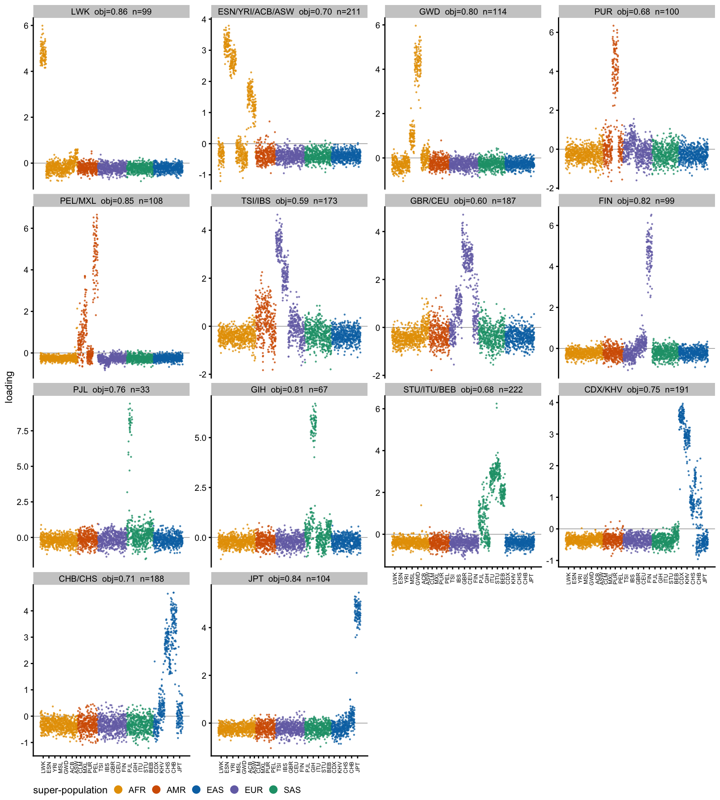
For comparison with the \(K = 30\) section above, here is the rank-\(r\) fit itself on the pruned data — the “parallel” runs, all 30 components at once, best of five starts.
# Population ordering and labelling, as for the full data but on the reduced
# sample.
L30_ns <- ns$fit$L
w <- pmax(L30_ns, 0)^2
L30_ns <- L30_ns[, order(colSums(w * as.integer(pop_ns)) / colSums(w)),
drop = FALSE]
colnames(L30_ns) <- sprintf("f%02d", seq_len(ncol(L30_ns)))
with_pop_labels_ns <- function(L) {
colnames(L) <- make.unique(sprintf("%s %s n=%d", colnames(L),
apply(L, 2, pop_label_ns),
colSums(L > 2)))
L
}
round(ns$fit$start_obj, 3)[1] 13.624 13.580 13.617 13.580 13.427plot_pop_heatmap_ns <- function(L) {
M <- apply(L, 2, function(x) tapply(x, pop_ns, mean))
df <- data.frame(
pop = factor(rep(rownames(M), ncol(M)), levels = rev(pop_order)),
factor = factor(rep(colnames(M), each = nrow(M)), levels = colnames(M)),
value = as.vector(M)
)
lim <- max(abs(df$value))
ggplot(df, aes(factor, pop, fill = value)) +
geom_tile() +
scale_fill_gradient2(low = "#2166AC", mid = "white", high = "#B2182B",
limits = c(-lim, lim)) +
labs(x = NULL, y = NULL, fill = "mean\nloading") +
theme_cowplot(font_size = 9) +
theme(axis.text.x = element_text(angle = 90, vjust = 0.5))
}
plot_pop_heatmap_ns(L30_ns)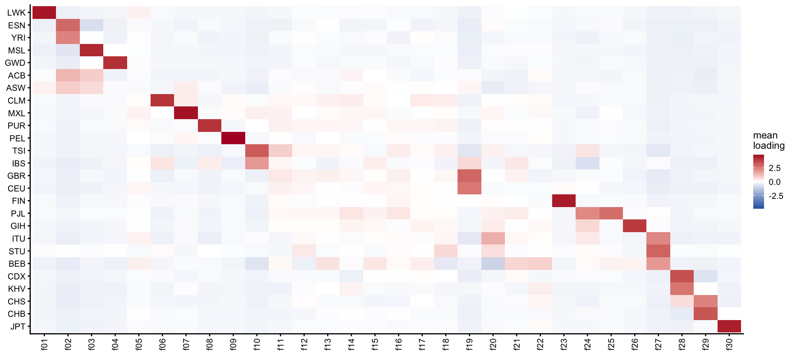
Splitting by whether the rank-1 runs recover each factor, exactly as for the full data. The converged points from the rank-\(r\) starts are the last 30 columns of the search above, so the test is the correlation between each factor and where rank-1 takes it:
L_after <- s_ns$L[, -(1:1000), drop = FALSE]
# Put the converged points in the same column order as L30_ns.
L_after <- L_after[, order(colSums(pmax(ns$fit$L, 0)^2 *
as.integer(pop_ns)) /
colSums(pmax(ns$fit$L, 0)^2)), drop = FALSE]
recovered_ns <- diag(cor(L30_ns, L_after)) > 0.9
table(recovered_ns)recovered_ns
FALSE TRUE
16 14 Recovered by the rank-1 runs:
plot_loadings_ns(with_pop_labels_ns(L30_ns[, recovered_ns, drop = FALSE]))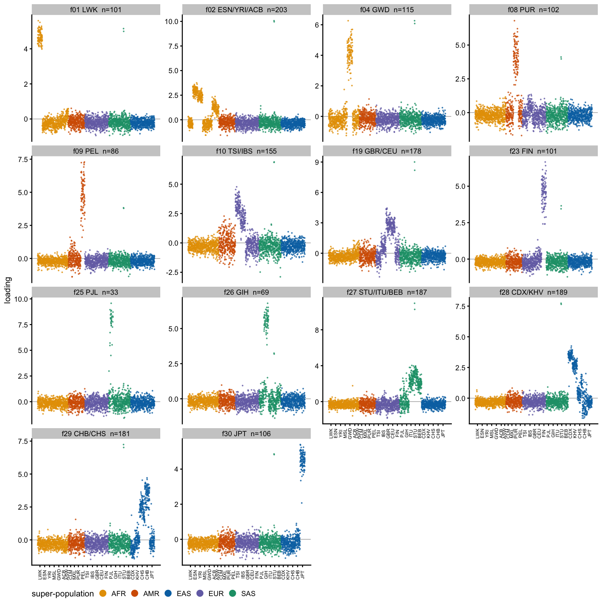
Not recovered — these exist only under the orthogonality constraint:
plot_loadings_ns(with_pop_labels_ns(L30_ns[, !recovered_ns, drop = FALSE]))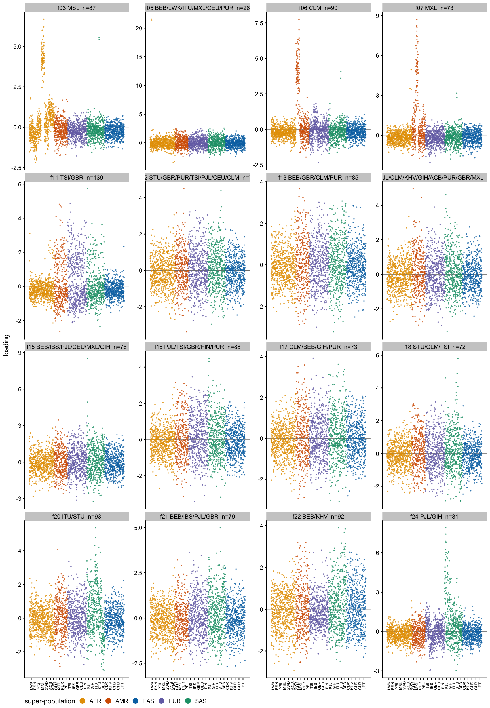
Dropping 40 of 2504 individuals (1.6%) turns a landscape with 17 maxima, wildly uneven basins and three maxima unreachable from random starts into one with 14 maxima, all population factors, all reachable. The \(K = 30\) objective falls from 18.17 to 13.62, which is the other side of the same coin: most of that difference was the sparse factors, and they were worth a lot of objective for very few individuals.
That is a reason to be careful about reading the full-data results as population structure. It also suggests the sparse factors are not a nuisance to be tuned away but the thing the \(x|x|\) contrast is most sensitive to — it finds close relatives and outlier samples before it finds populations, and on these data that is arguably the right behaviour for a first pass.
A different way to ask which factors are real: fit the same model to two independent halves of the SNPs and keep only the factors that appear in both. The SNP names are chromosome:position, so we split by chromosome parity — odd chromosomes against even — which keeps whole chromosomes together and so avoids splitting any residual LD across the two halves. Both fits use the pruned set of individuals from the previous section, so their loadings are directly comparable. In the following sections we start by looking at K=30 and then try the rank 1 runs.
A <- fit$split$odd$fit$L
B <- fit$split$even$fit$L
stopifnot(identical(rownames(A), rownames(B)),
identical(rownames(A), rownames(ns$U_c))) # same individuals as above
c(odd_snps = fit$split$odd$n_snps, even_snps = fit$split$even$n_snps,
n = nrow(A)) odd_snps even_snps n
92118 92998 2464 We match the 30 factors of one fit to the 30 of the other so as to maximize the total correlation (Hungarian algorithm). Correlations are signed rather than absolute, since \(x|x|\) is not sign-symmetric.
C <- cor(A, B)
pr <- RcppHungarian::HungarianSolver(-C)$pairs
perm <- pr[order(pr[, 1]), 2]
mcor <- C[cbind(seq_along(perm), perm)]
# The assignment is not doing any real work here: taking each factor's single
# best partner, ignoring the one-to-one constraint, selects the same factors.
identical(sort(which(apply(C, 1, max) > 0.3)), sort(which(mcor > 0.3)))[1] TRUEround(sort(mcor, decreasing = TRUE), 2) [1] 0.91 0.90 0.88 0.88 0.87 0.86 0.82 0.81 0.79 0.63 0.57 0.52
[13] 0.51 0.49 0.48 0.09 0.08 0.07 0.07 0.07 0.06 0.05 0.05 0.04
[25] 0.04 0.04 0.04 0.03 0.02 -0.06The matched correlations fall into two groups with nothing in between: 15 factors between 0.48 and 0.91, then a drop to 0.09 and below for the other 15. Any cutoff between 0.1 and 0.48 therefore selects the same 15 factors, so the choice is not delicate.
cutoff <- 0.3
matched <- which(mcor > cutoff)
length(matched)[1] 15# Order the matched factors by population, and label with the match correlation.
Am <- A[, matched, drop = FALSE]
w <- pmax(Am, 0)^2
o <- order(colSums(w * as.integer(pop_ns)) / colSums(w))
Am <- Am[, o, drop = FALSE]
r <- mcor[matched][o]
data.frame(odd_half = apply(Am, 2, pop_label_ns),
even_half = apply(B[, perm[matched][o], drop = FALSE], 2,
pop_label_ns),
r = round(r, 2), row.names = NULL) odd_half even_half r
1 LWK LWK 0.91
2 GWD/MSL GWD/MSL 0.86
3 CLM CLM 0.52
4 MXL MXL 0.49
5 PUR PUR 0.57
6 PEL PEL 0.87
7 TSI/IBS TSI/IBS 0.48
8 GBR/CEU/IBS GBR/CEU 0.51
9 FIN FIN 0.88
10 PJL PJL 0.63
11 GIH GIH 0.81
12 STU/ITU/BEB/PJL STU/ITU/BEB 0.82
13 CDX/KHV CDX/KHV 0.90
14 CHB/CHS CHB/CHS 0.79
15 JPT JPT 0.88The populations agree for all 15, including the ones whose correlation is only around 0.5 — PJL, PUR, CLM, MXL, TSI/IBS, GBR/CEU are each matched to a factor on the same populations in the other half. So the lower correlations are not mismatches; they reflect how noisily a factor is estimated from 92,000 SNPs. Note also the ceiling: the best agreement is 0.91, so even the most stable factors do not replicate perfectly at this number of SNPs.
These 15 are close to the 14 unconstrained maxima of the previous section: the same population factors, with GWD/MSL appearing here as one factor and STU/ITU/BEB/PJL absorbing PJL. The 15 unmatched factors are the diffuse multi-population composites — exactly the ones the rank-1 test also rejected. Two independent criteria, replication across SNP halves and being a local maximum without the orthogonality constraint, pick out nearly the same set.
# Matched factors, in a common order so the two tabs line up panel for panel:
# panel i of the odd tab and panel i of the even tab are a matched pair.
Am <- A[, matched[o], drop = FALSE]
Bm <- B[, perm[matched][o], drop = FALSE]
# Unmatched factors. These are not in correspondence, so each half is ordered
# by population on its own. `r_of` is each factor's assigned correlation, which
# for these is below the cutoff.
a_un <- setdiff(seq_len(ncol(A)), matched)
b_un <- perm[a_un] # the partners they were assigned
r_un <- mcor[a_un]
pop_order_of <- function(L) {
w <- pmax(L, 0)^2
order(colSums(w * as.integer(pop_ns)) / colSums(w))
}
oa <- pop_order_of(A[, a_un, drop = FALSE])
ob <- pop_order_of(B[, b_un, drop = FALSE])
Au <- A[, a_un[oa], drop = FALSE]
Bu <- B[, b_un[ob], drop = FALSE]
# Panel labels: populations, the match correlation, and the number of
# individuals loading above 2.
label_with_r <- function(L, rr) {
colnames(L) <- make.unique(sprintf("%s r=%.2f n=%d",
apply(L, 2, pop_label_ns), rr,
colSums(L > 2)))
L
}
Am <- label_with_r(Am, r)
Bm <- label_with_r(Bm, r)
Au <- label_with_r(Au, r_un[oa])
Bu <- label_with_r(Bu, r_un[ob])
c(matched = ncol(Am), unmatched_odd = ncol(Au), unmatched_even = ncol(Bu)) matched unmatched_odd unmatched_even
15 15 15 Panel \(i\) is the same matched pair in both tabs, so switching between them compares the two halves factor by factor.
plot_loadings_ns(Am)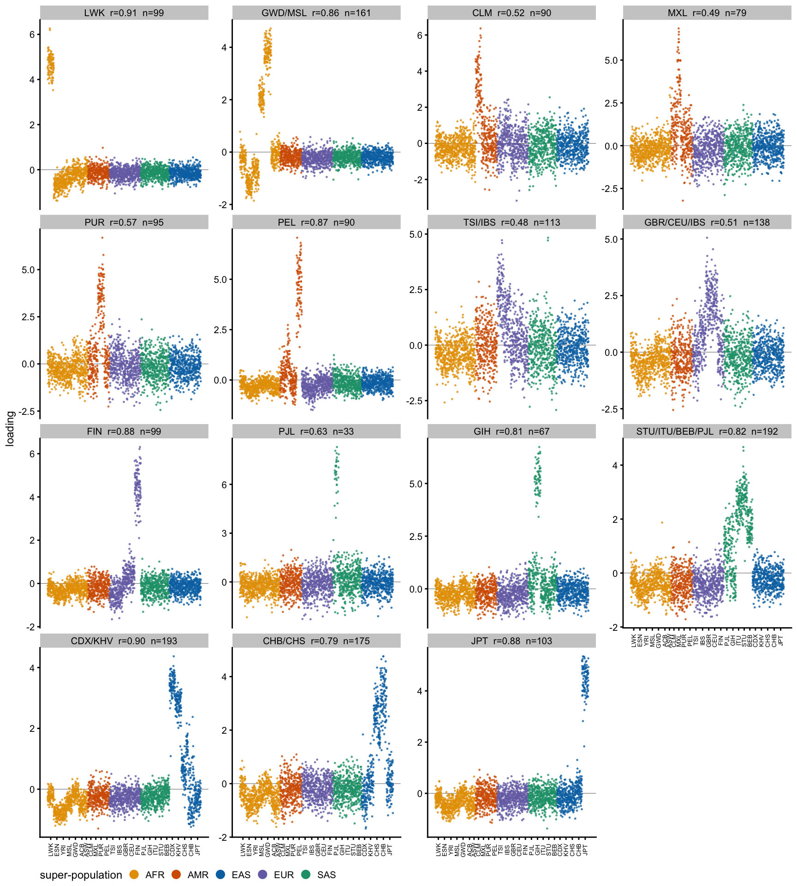
plot_loadings_ns(Bm)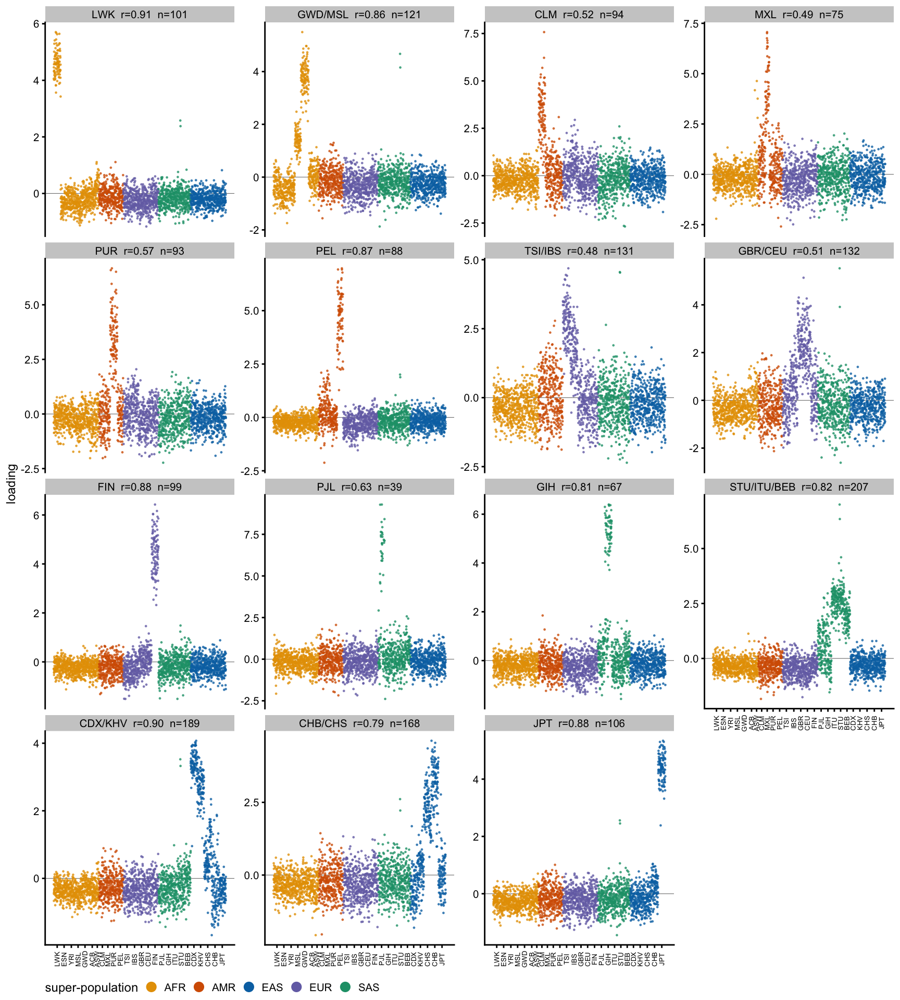
The other 15 from each fit, for comparison. These are not in correspondence between the tabs — that is the point — so each half is simply ordered by population.
plot_loadings_ns(Au)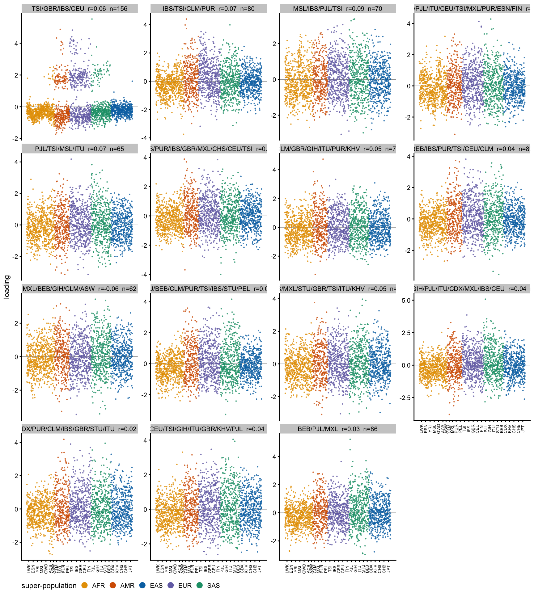
plot_loadings_ns(Bu)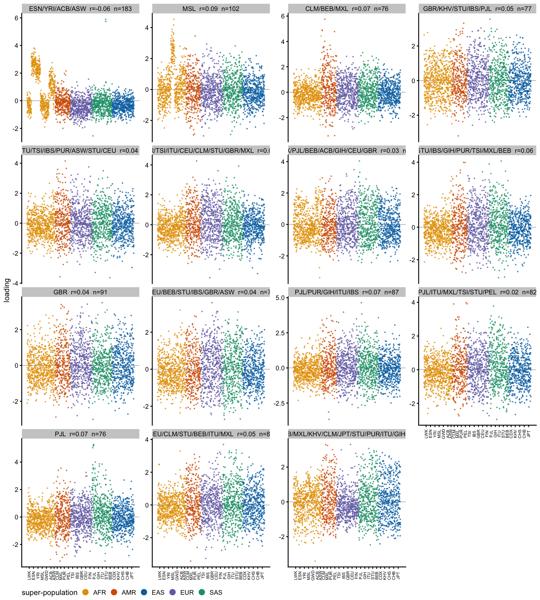
Here we run the 1000 random rank-1 starts separately on each half and match the maxima each search finds. Interestingly the results replicate in some ways better than the rank r results.
half_maxima <- function(U_c) {
nk <- nrow(U_c)
U <- sqrt(nk) * t(U_c[, 1:30])
set.seed(1)
W <- matrix(rnorm(30 * 1000), 30, 1000)
W <- sweep(W, 2, sqrt(colSums(W^2)), "/")
for (i in 1:500) W <- r1_update(U, W)
L <- t(U) %*% W
cl <- cutree(hclust(as.dist(1 - cor(L)), method = "complete"), h = 0.05)
j <- match(unique(cl), cl)
sz <- as.integer(table(cl)[as.character(cl[j])])
M <- L[, j, drop = FALSE]
o <- pop_order_of(M)
# W is kept as well: the second-round experiment below needs the maxima as
# directions in the whitened space, not just as loadings.
list(L = M[, o, drop = FALSE], size = sz[o],
W = W[, j[o], drop = FALSE], U_w = U)
}
mx_odd <- half_maxima(fit$split$odd$U_c)
mx_even <- half_maxima(fit$split$even$U_c)
c(odd = ncol(mx_odd$L), even = ncol(mx_even$L)) odd even
11 10 Fewer maxima than the 14 on the full pruned data, presumably the cost of using only half the SNPs. The finer distinctions merge, so GWD and MSL come back as one factor, as do CDX/KHV with CHS, PUR with TSI/IBS, and STU/ITU/BEB with PJL. In some sense the “shared” structure is more apparent here (eg FIN sharing with GBR), and TSI/IBS with PUR. I believe in some sense both stories are “correct” and a full analysis should be able to extract both the shared structure here and the finer-level structure of the full analysis.
Cm <- cor(mx_odd$L, mx_even$L)
data.frame(
odd = apply(mx_odd$L, 2, pop_label_ns),
odd_basin = mx_odd$size,
best_even = apply(mx_even$L, 2, pop_label_ns)[apply(Cm, 1, which.max)],
r = round(apply(Cm, 1, max), 2),
row.names = NULL) odd odd_basin best_even r
1 LWK 179 LWK 0.95
2 ESN/YRI/ACB/ASW 27 ESN/YRI/ACB/ASW 0.96
3 GWD/MSL 79 GWD/MSL 0.96
4 PEL/MXL 240 PEL/MXL 0.98
5 PUR/TSI/IBS/CLM 8 PUR/TSI/IBS 0.86
6 TSI/IBS/GBR/CEU/CLM/PUR 24 PUR/TSI/IBS 0.37
7 FIN 128 FIN 0.94
8 GIH 108 GIH 0.86
9 STU/ITU/PJL/BEB 53 STU/ITU/BEB/PJL 0.96
10 CDX/KHV/CHS 31 CDX/KHV/CHS 0.97
11 JPT 123 JPT 0.93Ten pairs match at \(r\) between 0.86 and 0.98. This compares with a best of 0.91 and a median near 0.8 for the rank-\(r\) factors. So the unconstrained maxima are arguably more stable across independent SNP sets than the factors of the rank-\(r\) fit.
The one exception is the odd half’s sixth maximum, TSI/IBS/GBR/CEU/CLM/PUR, whose best partner is only at \(r =\) 0.37.
c(odd_matched = sum(apply(Cm, 1, max) > 0.3),
even_matched = sum(apply(Cm, 2, max) > 0.3)) odd_matched even_matched
11 10 Every maximum each half finds: the 10 matched ones first, in a common order, so panel \(i\) is the same pair in both tabs. Any maximum without a partner comes after those, so the tabs line up only over the matched block — the \(r\) in each label says which block a panel is in.
best_o <- apply(Cm, 1, max) # each odd maximum's best even partner
best_e <- apply(Cm, 2, max)
keep_o <- which(best_o > 0.5) # matched, in odd order
part_e <- apply(Cm, 1, which.max)[keep_o] # their even partners
extra_o <- setdiff(seq_len(ncol(mx_odd$L)), keep_o) # odd-only maxima
extra_e <- setdiff(seq_len(ncol(mx_even$L)), part_e) # even-only maxima
Lo <- label_with_r(mx_odd$L[, c(keep_o, extra_o), drop = FALSE],
best_o[c(keep_o, extra_o)])
Le <- label_with_r(mx_even$L[, c(part_e, extra_e), drop = FALSE],
best_e[c(part_e, extra_e)])
c(odd_matched = length(keep_o), odd_only = length(extra_o),
even_matched = length(part_e), even_only = length(extra_e)) odd_matched odd_only even_matched even_only
10 1 10 0 plot_loadings_ns(Lo)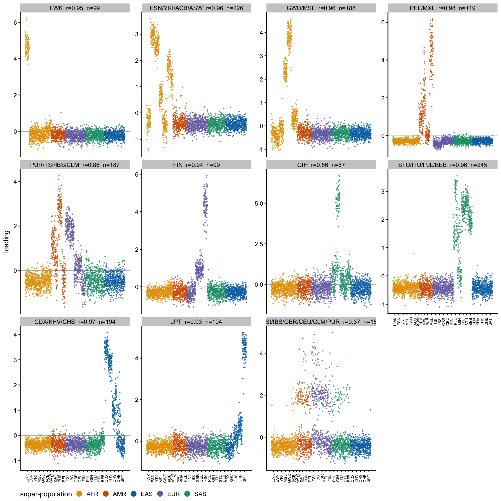
plot_loadings_ns(Le)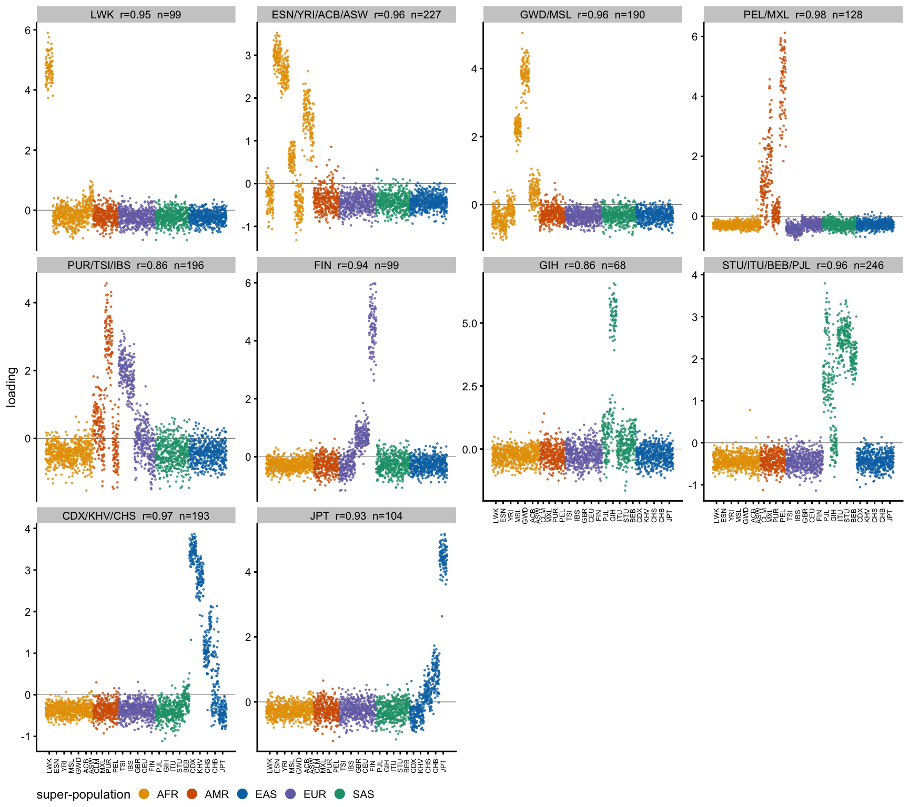
One factor behaves oddly enough to be worth following up. The even-chromosome rank-\(r\) fit has a clean ESN/YRI/ACB/ASW factor, the graded West African one seen throughout this analysis, and the odd-chromosome rank-\(r\) fit has nothing resembling it:
b_esn <- which.max(apply(B, 2, function(x)
mean(x[pop_ns %in% c("ESN", "YRI")]) ))
pop_label_ns(B[, b_esn])[1] "ESN/YRI/ACB/ASW"round(max(C[, b_esn]), 2) # best correlation with any odd-half factor[1] -0.06sum(grepl("^ESN|^YRI", apply(A, 2, pop_label_ns))) # odd-half ESN/YRI factors[1] 0Its best correlation with any of the 30 odd-chromosome factors is negative, and no odd-chromosome factor has ESN or YRI among its leading populations. This is not an artifact of the matching — greedy matching agrees.
But the rank-1 searches settle what is going on, and it is not a failure of the data. Both halves find a West African maximum, and they agree on it closely:
j_odd <- which.max(apply(mx_odd$L, 2, function(x) mean(x[pop_ns %in% c("ESN", "YRI")])))
j_even <- which.max(apply(mx_even$L, 2, function(x) mean(x[pop_ns %in% c("ESN", "YRI")])))
c(odd = pop_label_ns(mx_odd$L[, j_odd]), even = pop_label_ns(mx_even$L[, j_even])) odd even
"ESN/YRI/ACB/ASW" "ESN/YRI/ACB/ASW" round(cor(mx_odd$L[, j_odd], mx_even$L[, j_even]), 2)[1] 0.96c(odd_basin = mx_odd$size[j_odd], even_basin = mx_even$size[j_even]) odd_basin even_basin
27 17 So the West African direction is a genuine local maximum in both halves, matching at \(r = 0.96\); what fails is the odd half’s rank-\(r\) fit, which does not place a component there. Its basin is small in both halves (27 and 17 of 1000 starts), which fits the pattern from earlier: the factors the rank-\(r\) fit loses to a bad local optimum are the ones with small basins. The lesson is narrower than “a factor can vanish in a replicate” — it is that a single rank-\(r\) fit is the unreliable step, and the rank-1 search is what tells you whether the direction is really there.
Since the r1 results only find 10-11 optima, and the K30 results find more, I was wondering if we were missing any. I therefore tried various runs initialized to be orthogonal to the ones we found above; however none of these ideas produce new optima, so this section is documenting things that ultimately did not work. One interesting observation I do not fully understand: when I remove the newton term from the fastICA update it apparently osscilates and no longer converges. This may be something to do with the non-smoothness of the gradient? But it is interesting we did not see that problem with the newton term included.
The rank-1 search from random starts finds the same handful of optima over and over, with most of the 1000 runs landing in two or three big basins. A natural thing to try: take the optima found in the first round, and start a second round of 1000 runs from directions orthogonal to all of them. If the small basins are simply being crowded out by the big ones, forcing the starts into the orthogonal complement should uncover optima the first round missed.
The optima are not mutually orthogonal, so we take an orthonormal basis \(Q\) of their span and project the random starts with \(I - QQ'\). Note that only the initialization is constrained — the iteration itself is the same free rank-1 update as before.
second_round <- function(mx, seed = 2, n_starts = 1000, n_iter = 500) {
U <- mx$U_w
Q <- qr.Q(qr(mx$W)) # basis for the span of round-1 optima
set.seed(seed)
X <- matrix(rnorm(nrow(U) * n_starts), nrow(U), n_starts)
X <- X - Q %*% (t(Q) %*% X) # project onto the complement
W <- sweep(X, 2, sqrt(colSums(X^2)) + 1e-15, "/")
start_leak <- max(abs(t(Q) %*% W)) # should be ~0
for (i in seq_len(n_iter)) W <- r1_update(U, W)
L <- t(U) %*% W
cl <- cutree(hclust(as.dist(1 - cor(L)), method = "complete"), h = 0.05)
j <- match(unique(cl), cl)
sz <- as.integer(table(cl)[as.character(cl[j])])
M <- L[, j, drop = FALSE]
o <- order(sz, decreasing = TRUE)
list(L = M[, o, drop = FALSE], size = sz[o], q_dim = ncol(Q),
start_leak = start_leak)
}
r2_odd <- second_round(mx_odd)
r2_even <- second_round(mx_even)
# Dimension of the span, and a check that the starts really are orthogonal to it.
rbind(odd = c(span = r2_odd$q_dim, complement = 30 - r2_odd$q_dim,
start_leak = r2_odd$start_leak),
even = c(span = r2_even$q_dim, complement = 30 - r2_even$q_dim,
start_leak = r2_even$start_leak)) span complement start_leak
odd 11 19 7.994397e-16
even 10 20 6.736195e-16So there is plenty of room to start in: 19 dimensions for the odd half, 20 for the even, and the starts have no component along the round-1 optima to within rounding error. The result is nonetheless completely negative.
compare_rounds <- function(r2, mx, tag) {
C <- cor(r2$L, mx$L)
data.frame(
half = tag,
round2 = apply(r2$L, 2, pop_label_ns),
basin = r2$size,
best_r1 = apply(mx$L, 2, pop_label_ns)[apply(C, 1, which.max)],
r = round(apply(C, 1, max), 2),
new = apply(C, 1, max) <= 0.9,
row.names = NULL)
}
rbind(compare_rounds(r2_odd, mx_odd, "odd"),
compare_rounds(r2_even, mx_even, "even")) half round2 basin best_r1 r new
1 odd PEL/MXL 289 PEL/MXL 1 FALSE
2 odd STU/ITU/PJL/BEB 269 STU/ITU/PJL/BEB 1 FALSE
3 odd LWK 141 LWK 1 FALSE
4 odd GWD/MSL 118 GWD/MSL 1 FALSE
5 odd ESN/YRI/ACB/ASW 70 ESN/YRI/ACB/ASW 1 FALSE
6 odd JPT 38 JPT 1 FALSE
7 odd PUR/TSI/IBS/CLM 32 PUR/TSI/IBS/CLM 1 FALSE
8 odd FIN 19 FIN 1 FALSE
9 odd CDX/KHV/CHS 18 CDX/KHV/CHS 1 FALSE
10 odd GIH 5 GIH 1 FALSE
11 odd TSI/IBS/GBR/CEU/CLM/PUR 1 TSI/IBS/GBR/CEU/CLM/PUR 1 FALSE
12 even PEL/MXL 355 PEL/MXL 1 FALSE
13 even STU/ITU/BEB/PJL 269 STU/ITU/BEB/PJL 1 FALSE
14 even LWK 136 LWK 1 FALSE
15 even GWD/MSL 90 GWD/MSL 1 FALSE
16 even JPT 46 JPT 1 FALSE
17 even ESN/YRI/ACB/ASW 45 ESN/YRI/ACB/ASW 1 FALSE
18 even PUR/TSI/IBS 30 PUR/TSI/IBS 1 FALSE
19 even FIN 18 FIN 1 FALSE
20 even GIH 7 GIH 1 FALSE
21 even CDX/KHV/CHS 4 CDX/KHV/CHS 1 FALSEc(odd_round1 = ncol(mx_odd$L), odd_round2 = ncol(r2_odd$L),
odd_new = sum(apply(cor(r2_odd$L, mx_odd$L), 1, max) <= 0.9),
even_round1 = ncol(mx_even$L), even_round2 = ncol(r2_even$L),
even_new = sum(apply(cor(r2_even$L, mx_even$L), 1, max) <= 0.9)) odd_round1 odd_round2 odd_new even_round1 even_round2 even_new
11 11 0 10 10 0 Every optimum found in round 2 is one of the round-1 optima, at a correlation of 1.00, and every round-1 optimum is refound. Zero new optima in either half. Orthogonal initialization is not enough.
What it does change is the basins. Starting in the complement reweights which optima the runs fall into — on the odd half PEL/MXL goes from 240 starts to 289 while GIH drops from 108 to 5, and FIN from 128 to 19 — so the initialization clearly matters for where a run ends up. It just does not open up anywhere new to end up.
Because only the starting point is constrained, and the constraint does not survive contact with the update. Tracking how much of each run lies in the span of the round-1 optima:
Q <- qr.Q(qr(mx_odd$W))
set.seed(2)
X <- matrix(rnorm(30 * 1000), 30, 1000)
X <- X - Q %*% (t(Q) %*% X)
W <- sweep(X, 2, sqrt(colSums(X^2)), "/")
leak <- sapply(0:8, function(i) {
if (i > 0) W <<- r1_update(mx_odd$U_w, W)
mean(sqrt(colSums((t(Q) %*% W)^2))) # each column is a unit vector
})
round(setNames(leak, paste0("iter", 0:8)), 3)iter0 iter1 iter2 iter3 iter4 iter5 iter6 iter7 iter8
0.000 0.846 0.796 0.807 0.828 0.849 0.871 0.888 0.903 One iteration puts 85% of the typical run’s norm back inside the span, and by iteration 8 it is 90% and climbing. The update is free to move in any direction, and the directions that increase \(x|x|\) fastest are the ones the old optima already point along; the projection is undone immediately.
The implication is that finding genuinely new optima would need the orthogonality imposed throughout the iteration — deflation against the previously found optima at every step, as in a sequential fastICA — rather than only at the start. That is a different algorithm, and worth trying separately. It is also a reminder of how few distinct one-sided directions these data really contain: 2000 rank-1 runs per half, 1000 of them deliberately started away from everything already found, and the answer is still 11 optima for the odd chromosomes and 10 for the even.
The other obvious place to start is the rank-\(r\) fit itself. On the unpruned full data that was how we found three maxima the random starts never reached, so it is the most promising remaining source of new optima. Here we take each half’s own \(K = 30\) factors as 30 starting directions and run the free rank-1 update from each.
from_rankr <- function(mx, U_c, L_rankr, n_iter = 500) {
U <- mx$U_w
W <- t(U_c[, 1:30]) %*% L_rankr / sqrt(nrow(U_c))
for (i in seq_len(n_iter)) W <- r1_update(U, W)
L <- t(U) %*% W
cl <- cutree(hclust(as.dist(1 - cor(L)), method = "complete"), h = 0.05)
j <- match(unique(cl), cl)
list(L = L[, j, drop = FALSE],
size = as.integer(table(cl)[as.character(cl[j])]))
}
k30_odd <- from_rankr(mx_odd, fit$split$odd$U_c, fit$split$odd$fit$L)
k30_even <- from_rankr(mx_even, fit$split$even$U_c, fit$split$even$fit$L)
summarise <- function(kk, mx, tag) {
C <- cor(kk$L, mx$L)
c(half = tag, random_round1 = ncol(mx$L), from_k30 = ncol(kk$L),
new = sum(apply(C, 1, max) <= 0.9),
union = length(unique(cutree(hclust(as.dist(1 - cor(cbind(mx$L, kk$L))),
method = "complete"), h = 0.05))))
}
rbind(summarise(k30_odd, mx_odd, "odd"),
summarise(k30_even, mx_even, "even")) half random_round1 from_k30 new union
[1,] "odd" "11" "10" "0" "11"
[2,] "even" "10" "10" "0" "10" No new optima again. Every one of the 30 starting directions in each half converges to a maximum the random starts had already found, at a correlation of 1.00. Together with the orthogonal-initialization result, that is 3000 rank-1 runs per half from three quite different initialization schemes, all returning the same 11 and 10 optima.
There is one asymmetry worth noting. On the odd half the rank-\(r\) starts reach only 10 of the 11 optima, and the one they miss is the West African factor:
missed <- function(kk, mx) {
C <- cor(kk$L, mx$L)
apply(mx$L, 2, pop_label_ns)[apply(C, 2, max) <= 0.9]
}
list(odd = missed(k30_odd, mx_odd), even = missed(k30_even, mx_even))$odd
[1] "ESN/YRI/ACB/ASW"
$even
character(0)That is the same blind spot from two sections ago, seen from the other side. The odd half’s \(K = 30\) fit has no component pointing at the West African direction, so rank-1 runs started from its columns cannot find it either — the defect is inherited. On the odd half that maximum is reachable only from random starts (27 of 1000) or from the orthogonal complement (70 of 1000), which is a cautionary argument for not treating a rank-\(r\) fit as a comprehensive summary of what the data contain.
The reason orthogonal initialization fails is that the fastICA update leaves the orthogonal complement in a single step. That update is a Newton-type step: it subtracts a curvature term, \(W \leftarrow UG' - W\,\text{colSums}(G'')\). Two milder alternatives to run for 100 iterations before switching to the full update:
The hypothesis to test is that these are slower to move away from the orthogonal start, and so might stay in the complement long enough to settle into a basin the full update runs straight past.
ga_update <- function(U, W, lr) {
P <- t(U) %*% W
W <- W + lr * (U %*% (2 * abs(P))) / ncol(U)
sweep(W, 2, sqrt(colSums(W^2)) + 1e-15, "/")
}
# The fastICA update without the Newton/curvature term.
nonewton_update <- function(U, W) {
P <- t(U) %*% W
W <- U %*% (2 * abs(P))
sweep(W, 2, sqrt(colSums(W^2)) + 1e-15, "/")
}
r1_obj <- function(U, W) { P <- t(U) %*% W; colMeans(P * abs(P)) }
# Orthogonal starts, as in the previous section.
Q_odd <- qr.Q(qr(mx_odd$W))
ortho_starts <- function(Q, seed = 2, n_starts = 1000) {
set.seed(seed)
X <- matrix(rnorm(nrow(Q) * n_starts), nrow(Q), n_starts)
X <- X - Q %*% (t(Q) %*% X)
sweep(X, 2, sqrt(colSums(X^2)), "/")
}First, do these in fact stay put longer? We track the mean norm of each run’s component inside the span of the round-1 optima.
leak_curve <- function(step, iters = c(1, 2, 5, 10, 25, 50, 100)) {
W <- ortho_starts(Q_odd)
out <- numeric(0)
for (i in seq_len(max(iters))) {
W <- step(W)
if (i %in% iters) out <- c(out, mean(sqrt(colSums((t(Q_odd) %*% W)^2))))
}
setNames(round(out, 3), paste0("it", iters))
}
rbind(`GA lr=0.01` = leak_curve(function(W) ga_update(mx_odd$U_w, W, 0.01)),
`GA lr=0.1` = leak_curve(function(W) ga_update(mx_odd$U_w, W, 0.1)),
`GA lr=1` = leak_curve(function(W) ga_update(mx_odd$U_w, W, 1)),
`no Newton` = leak_curve(function(W) nonewton_update(mx_odd$U_w, W)),
`full update` = leak_curve(function(W) r1_update(mx_odd$U_w, W))) it1 it2 it5 it10 it25 it50 it100
GA lr=0.01 0.003 0.006 0.015 0.030 0.075 0.147 0.276
GA lr=0.1 0.030 0.060 0.147 0.274 0.533 0.777 0.924
GA lr=1 0.284 0.435 0.652 0.833 0.975 0.999 1.000
no Newton 0.856 0.807 0.851 0.937 0.994 0.993 0.992
full update 0.846 0.796 0.849 0.927 0.998 1.000 1.000For gradient ascent, emphatically yes: the full update has 85% of its norm back inside the span after a single iteration, while \(\lambda = 0.01\) is at 0.003 after one iteration and still only 0.28 after a hundred. For the no-Newton update, emphatically no — dropping the curvature term makes no difference to this at all, 0.86 after one iteration against the full update’s 0.85. The Newton term is not what carries the iterates back into the span; the gradient direction alone does that, and it is the step size that controls how fast.
Neither makes any difference to what is found.
# Run `step` for n_warm iterations from the orthogonal starts, record where we
# are, then switch to the full update and see what we end up with.
warm_then_full <- function(step, label, n_warm = 100, n_full = 500) {
U <- mx_odd$U_w
W <- ortho_starts(Q_odd)
for (i in seq_len(n_warm)) W <- step(W)
warm <- c(leak = mean(sqrt(colSums((t(Q_odd) %*% W)^2))),
obj = mean(r1_obj(U, W)),
distinct = length(unique(cutree(
hclust(as.dist(1 - cor(t(U) %*% W)), method = "complete"),
h = 0.05))))
for (i in seq_len(n_full)) W <- r1_update(U, W)
L <- t(U) %*% W
cl <- cutree(hclust(as.dist(1 - cor(L)), method = "complete"), h = 0.05)
j <- match(unique(cl), cl)
C <- cor(L[, j, drop = FALSE], mx_odd$L)
data.frame(warmup = label, n_warm = n_warm,
warm_leak = round(warm[["leak"]], 3),
warm_obj = round(warm[["obj"]], 3),
warm_distinct = warm[["distinct"]],
final_optima = length(j),
new = sum(apply(C, 1, max) <= 0.9), row.names = NULL)
}
ga_then_full <- function(lr, ...)
warm_then_full(function(W) ga_update(mx_odd$U_w, W, lr),
sprintf("GA lr=%g", lr), ...)
rbind(ga_then_full(0.01), ga_then_full(0.1), ga_then_full(1),
warm_then_full(function(W) nonewton_update(mx_odd$U_w, W), "no Newton")) warmup n_warm warm_leak warm_obj warm_distinct final_optima new
1 GA lr=0.01 100 0.276 0.124 1000 11 0
2 GA lr=0.1 100 0.924 0.671 55 7 0
3 GA lr=1 100 1.000 0.710 7 7 0
4 no Newton 100 0.992 0.639 108 11 0Still zero new optima, from any of the four warm-ups. The warm_obj column explains why the gradient delay does not help: at \(\lambda = 0.01\) the mean objective after 100 iterations is about 0.12, against 0.83 at an optimum, and all 1000 runs are still mutually distinct. Gradient ascent has not been exploring the complement and settling somewhere — it has barely started optimizing. The orthogonality is preserved precisely because almost nothing has happened yet, so when the full update takes over it does the same thing it would have done from the start.
The no-Newton row needs a different reading, and a warning. It reports about a hundred warm_distinct clusters at mean objective 0.64, which looks at first like a large set of additional optima. It is not: the no-Newton iteration does not converge. Checking whether its iterates are stationary points — successive iterates should stop moving, and the Riemannian gradient should vanish, as it does at the true optima:
U <- mx_odd$U_w
W <- ortho_starts(Q_odd)
for (i in 1:100) W <- nonewton_update(U, W)
W_next <- nonewton_update(U, W)
# Riemannian gradient norm of the objective at each column (0 at an optimum).
rgrad_norm <- function(U, W) {
n <- ncol(U)
G <- (2 / n) * (U %*% abs(t(U) %*% W))
sqrt(colSums((G - sweep(W, 2, colSums(W * G), "*"))^2))
}
c(step_size = round(mean(sqrt(colSums((W_next - W)^2))), 3),
rgrad_noNewton = round(mean(rgrad_norm(U, W)), 3),
rgrad_optima = signif(max(rgrad_norm(U, mx_odd$W)), 2)) step_size rgrad_noNewton rgrad_optima
4.55e-01 5.82e-01 1.00e-15 # 2000 more iterations do not settle it.
for (i in 1:2000) W <- nonewton_update(U, W)
c(obj = round(mean(r1_obj(U, W)), 3),
rgrad = round(mean(rgrad_norm(U, W)), 3),
distinct = length(unique(cutree(
hclust(as.dist(1 - cor(t(U) %*% W)), method = "complete"), h = 0.05)))) obj rgrad distinct
0.639 0.584 99.000 The iterates are still moving by 0.46 per step after 100 iterations, their mean Riemannian gradient is 0.58 where the true optima have 1e-15, and 2000 further iterations leave all of that unchanged. So the no-Newton update oscillates indefinitely rather than converging, and its “distinct clusters” are snapshots of moving points, not optima. The Newton term is what makes this iteration converge at all — which is presumably why it is there.
The obvious follow-up for gradient ascent is to let it converge on its own rather than switching after a fixed 100 iterations. This took a while so I stopped evaluating it.
rbind(ga_then_full(0.01, n_warm = 1000),
ga_then_full(0.01, n_warm = 5000),
ga_then_full(0.1, n_warm = 5000))Given enough iterations it does converge, and to fixed points of the same objective — but to only 7 of the 11, and never to anything new. Gradient ascent is a coarser search than the Newton update here, not a finer one: its basins are larger, so it finds fewer of the optima rather than more.
So every scheme tried in this section — orthogonal starts, the rank-\(r\) factors, a slow gradient warm start from orthogonal starts, and dropping the Newton term — returns a subset of the 11 optima that 1000 plain random starts already find. On these data the rank-1 landscape really does appear to have just those 11 (and 10 for the even chromosomes), and the difficulty is not in finding them but in the rank-\(r\) fit’s tendency to miss the ones with small basins.
sessionInfo()R version 4.4.2 (2024-10-31)
Platform: aarch64-apple-darwin20
Running under: macOS 26.5.2
Matrix products: default
BLAS: /System/Library/Frameworks/Accelerate.framework/Versions/A/Frameworks/vecLib.framework/Versions/A/libBLAS.dylib
LAPACK: /Library/Frameworks/R.framework/Versions/4.4-arm64/Resources/lib/libRlapack.dylib; LAPACK version 3.12.0
locale:
[1] C
time zone: America/Chicago
tzcode source: internal
attached base packages:
[1] stats graphics grDevices utils datasets methods base
other attached packages:
[1] cowplot_1.2.0 ggplot2_4.0.2
loaded via a namespace (and not attached):
[1] gtable_0.3.6 jsonlite_2.0.0 dplyr_1.2.0 compiler_4.4.2
[5] promises_1.5.0 tidyselect_1.2.1 Rcpp_1.1.1 stringr_1.6.0
[9] git2r_0.36.2 later_1.4.6 jquerylib_0.1.4 scales_1.4.0
[13] yaml_2.3.12 fastmap_1.2.0 RcppHungarian_0.3 R6_2.6.1
[17] labeling_0.4.3 generics_0.1.4 workflowr_1.7.2 knitr_1.51
[21] tibble_3.3.1 rprojroot_2.1.1 bslib_0.10.0 pillar_1.11.1
[25] RColorBrewer_1.1-3 rlang_1.1.7 cachem_1.1.0 stringi_1.8.7
[29] httpuv_1.6.16 xfun_0.56 S7_0.2.1 fs_1.6.6
[33] sass_0.4.10 otel_0.2.0 cli_3.6.5 withr_3.0.2
[37] magrittr_2.0.4 digest_0.6.39 grid_4.4.2 lifecycle_1.0.5
[41] vctrs_0.7.2 evaluate_1.0.5 glue_1.8.0 farver_2.1.2
[45] whisker_0.4.1 rmarkdown_2.30 tools_4.4.2 pkgconfig_2.0.3
[49] htmltools_0.5.9